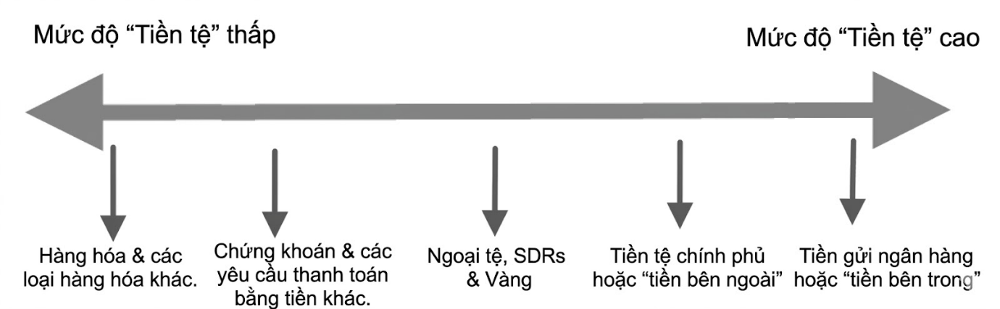
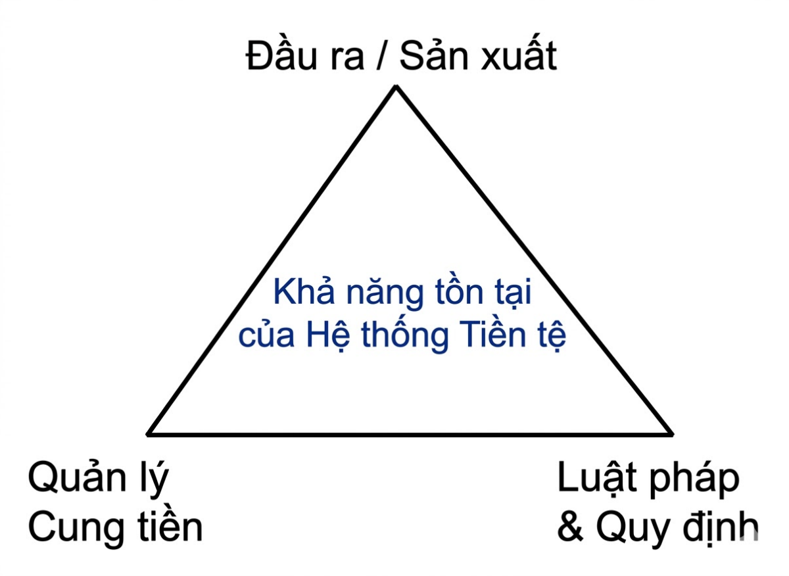
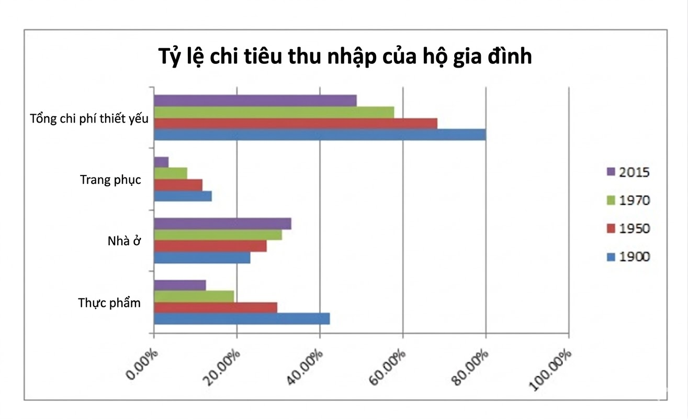
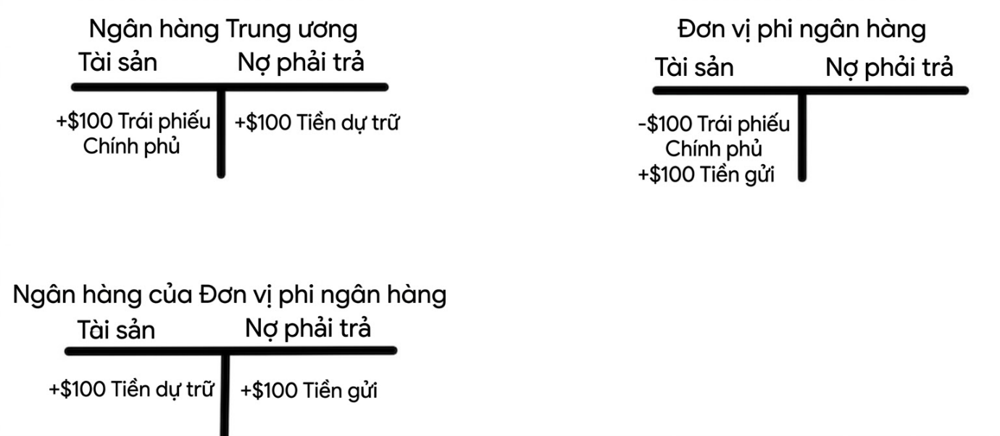
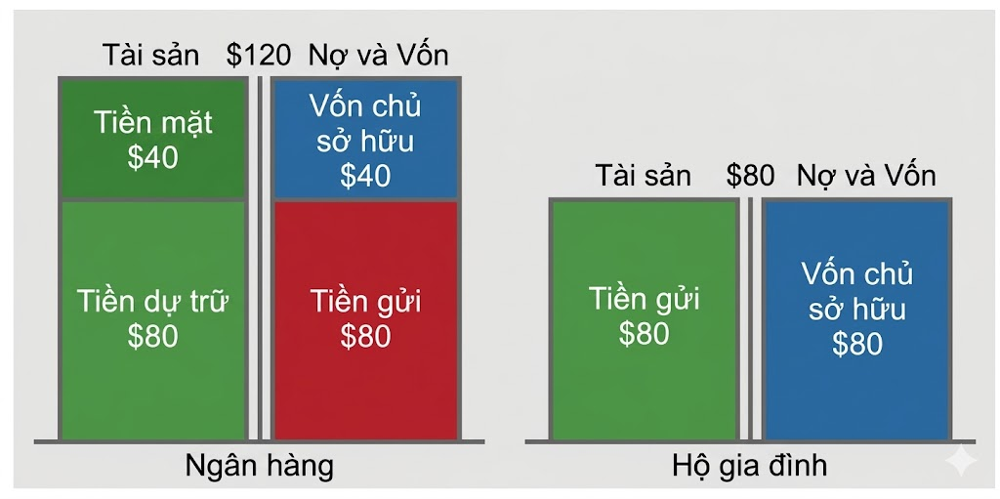
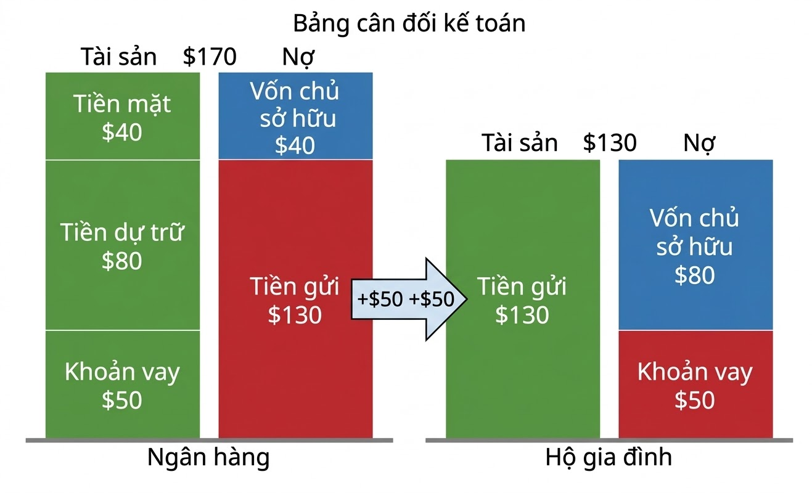

Tác giả: Cullen O. Roche Phiên bản đầu tiên: ngày 5 tháng 8 năm 2011 Cập nhật: 2012, 2015 & 2023
TÓM TẮT
Tài liệu này cung cấp một cái nhìn tổng quát về cách thức vận hành của hệ thống tiền tệ hiện đại, sử dụng phương pháp tiếp cận các nguyên lý cơ bản của kinh tế vĩ mô. Mục tiêu của tài liệu này là cung cấp một khuôn khổ để hiểu về tiền tệ hiện đại, nhằm giúp mọi người định hướng và vận hành tốt hơn trong thế giới tài chính và nền kinh tế.
Phần 1) Giới thiệu
Mục tiêu chính của bài nghiên cứu này là mô tả một cách khách quan thực tế vận hành của hệ thống tiền tệ pháp định hiện đại tại Hoa Kỳ. Bài viết nhằm cung cấp cho người đọc sự hiểu biết tổng thể tốt hơn về tiền tệ, kinh tế vĩ mô và cách thức hệ thống tiền tệ có thể được sử dụng để đạt được sự thịnh vượng. Mặc dù công trình này tập trung chủ yếu vào Hoa Kỳ, nhưng chủ đề này có thể được áp dụng cho nhiều quốc gia khác trên thế giới.
Tổng quan – Phương pháp tiếp cận từ các nguyên lý cơ bản
Nghiên cứu này được thiết kế để cung cấp sự hiểu biết về hệ thống tiền tệ từ các nguyên lý cơ bản. Mục đích của khung phân tích này là mô tả các mối quan hệ thể chế phức tạp giữa chính phủ (khu vực công) và khu vực phi chính phủ (khu vực tư nhân và nước ngoài), cũng như cách thức “cỗ máy” tiền tệ vận hành để góp phần vào sự thịnh vượng kinh tế. Những nguyên lý này phù hợp nhất với các quốc gia có chính phủ dân chủ trong nền kinh tế tư bản, nơi khu vực tư nhân cạnh tranh để tạo ra tiền/tài sản và chính phủ hoạt động chủ yếu như một nhà điều tiết dân chủ và cơ chế hỗ trợ cho nền kinh tế nội địa tư nhân. Bài viết này được cấu trúc dựa trên các nguyên lý nền tảng sau đây: 1. “Tiền” là một phương tiện trao đổi. Vai trò chính của “tiền” là phục vụ như một phương tiện thanh toán. Tiền có thể tồn tại dưới nhiều hình thức, nhưng trong hệ thống tiền tệ hiện đại, phương tiện thanh toán cuối cùng chủ yếu đến từ bên trong hệ thống ngân hàng tư nhân dưới dạng tiền gửi ngân hàng.
- Khu vực tư nhân và Khu vực công có mối quan hệ cộng sinh. Hệ thống tiền tệ tồn tại chủ yếu vì mục đích tư nhân nhằm tạo ra một hệ thống trao đổi hàng hóa và dịch vụ hiệu quả. Khu vực tư nhân đóng vai trò dẫn dắt trong việc giúp nâng cao phúc lợi của xã hội nơi tiền được sử dụng, và chính phủ có thể được xem xét tốt nhất như một nhà điều tiết và tác nhân hỗ trợ trong việc đạt được sự thịnh vượng kinh tế. 3. Mọi hình thức tài sản tài chính của tiền (cũng như các tài sản tài chính nội địa) đều mang tính “nội sinh” và có tính đàn hồi. Trong nhiều hệ thống dựa trên thị trường như Hoa Kỳ, cung tiền được tư nhân hóa và kiểm soát bởi các ngân hàng tư nhân cạnh tranh để tạo ra các khoản vay, từ đó tạo ra tiền gửi (tiền). Những hình thức tiền này mang tính “nội sinh” ở chỗ chúng không xuất phát từ đâu cả mà được tạo ra thông qua đòn bẩy dưới dạng tín dụng. Chính phủ cũng có thể tạo ra tài sản một cách nội sinh nhưng chủ yếu thực hiện điều đó để hỗ trợ hệ thống ngân hàng tư nhân và/hoặc khu vực tư nhân nói chung. Cung tiền này có tính “đàn hồi”, nghĩa là nó có thể mở rộng và thu hẹp tùy theo nhu cầu của người sử dụng. 4. Tiền của Khu vực công hỗ trợ tài sản của Khu vực tư nhân. Khu vực công (chính phủ) đóng vai trò tạo điều kiện thuận lợi trong việc giúp điều tiết và quản lý cơ sở hạ tầng mà trong đó hệ thống tiền tệ vận hành. Nếu được sử dụng đúng cách, chính phủ có thể là một công cụ mạnh mẽ giúp ổn định và tạo ra hiệu quả trong hệ thống tiền tệ. 5. Đầu tư trong nước duy trì hệ thống tiền tệ pháp định. Một hệ thống tiền tệ pháp định chỉ bền vững vì nền kinh tế của nó tạo ra hàng hóa và dịch vụ để duy trì nhu cầu mạnh mẽ đối với tiền tệ. Điều này đạt được chủ yếu thông qua đầu tư trong nước (chi tiêu cho sản xuất tương lai) và việc tạo ra cũng như đổi mới hàng hóa và dịch vụ, vốn mang lại giá trị cho các tài sản tài chính cơ sở mà tiền được định danh. 6. Hệ thống tài chính là một hệ thống tăng trưởng theo hàm mũ. Hệ thống tài chính
mang tính nội sinh, nghĩa là nó được tạo ra từ hư không chủ yếu như một hình thức kế toán và lưu giữ hồ sơ. Không có giới hạn đối với số lượng tài sản và nợ phải
trả tài chính có thể được tạo ra từ hư không, và trên thực tế, số lượng tài sản và nợ phải trả nhìn chung sẽ mở rộng theo thời gian khi dân số tăng lên và ngày càng có nhiều người dùng yêu cầu quyền truy cập vào hệ thống tiền tệ hiện đại. Điều này có nghĩa là việc mở rộng bảng cân đối kế toán tổng hợp (cả tài sản và nợ phải trả) không chỉ là bình thường mà còn là cần thiết.
- Nền kinh tế thực giới hạn sự tăng trưởng theo hàm mũ của hệ thống tài chính. Các nguồn lực thực và tài sản phi tài chính hỗ trợ sự tồn tại của hệ thống tài sản tài chính. Mặc dù không có giới hạn lý thuyết nào đối với số lượng tài sản và nợ phải trả tài chính, nhưng có một giới hạn thực tế đối với số lượng tài sản phi tài chính mà các tài sản tài chính được hỗ trợ bởi đó. Giới hạn thực tế của hệ thống tài chính dựa trên việc sản xuất các nguồn lực và tài sản phi tài chính mà chúng ta tạo ra trong quá trình phát triển nền kinh tế.
Mục 2) Tìm hiểu về Tiền tệ Hiện đại
Tiền, trong một hệ thống tiền tệ hiện đại, là một cấu trúc xã hội đóng vai trò chủ yếu như một phương tiện trao đổi (phương tiện thanh toán). Tiền cũng phục vụ các mục đích khác, nhưng chúng ta sẽ tập trung chủ yếu vào chức năng cơ bản và phổ biến nhất của nó. Là một loài có tính xã hội, chúng ta trao đổi hàng hóa và dịch vụ bằng công cụ này. Trong suốt lịch sử, nhiều thứ đã từng và vẫn đang đóng vai trò là tiền. Tuy nhiên, một số hình thức tiền nhất định có thể được xem là có “tính tiền tệ” cao hơn các hình thức khác trong một xã hội cụ thể. Nhìn chung, thứ gì được chấp nhận rộng rãi nhất như một phương tiện thanh toán thì có thể được xem là có mức độ tính tiền tệ cao nhất. ● Tiền pháp định (Fiat money): Một hình thức tiền được chấp nhận rộng rãi nhờ luật pháp chính phủ và hiệu ứng mạng lưới xã hội. ● Đơn vị kế toán: Một đơn vị tiền tệ tiêu chuẩn để đo lường giá trị của hàng hóa, dịch vụ và tài sản tài chính. Tại Hoa Kỳ, đơn vị kế toán là Đô la Mỹ. ● Phương tiện trao đổi: Một công cụ trung gian được chấp nhận rộng rãi giúp tạo điều kiện thuận lợi cho việc bán, mua hoặc giao dịch hàng hóa/dịch vụ.
Tiền là gì?
Tiền là một công cụ trao đổi nằm ở trung tâm của mọi giao dịch tài chính, bao gồm các tính toán của chúng ta về sản lượng, lợi nhuận và mọi thước đo về sức khỏe tài chính. Hiểu được cách thức hoạt động của công cụ này không chỉ là trọng tâm để hiểu cách thức vận hành của hệ thống tiền tệ và nền kinh tế, mà còn để hiểu về đời sống con người hiện đại.
Tại sao chúng ta sử dụng tiền?
Trong xã hội loài người hiện đại, tiền đã tiến hóa ở mức độ cao, mang tính hình thức và thậm chí là được thể chế hóa. Lịch sử thực sự của tiền bạc đã bị thời gian làm phai mờ, nhưng
những ghi chép sớm nhất về tiền ở vùng Lưỡng Hà cổ đại cho thấy tiền bắt đầu dưới dạng những lời hứa ngầm giữa các bên tư nhân dưới hình thức các hợp đồng tín dụng. Ngày nay, hầu hết tiền được định nghĩa và bảo vệ bởi luật pháp thông qua các hợp đồng pháp lý (như hợp đồng nợ) và được duy trì như một hồ sơ kế toán và phương tiện thanh toán. Chúng ta đang sống trong một hệ thống kinh tế tinh vi và phát triển cao, dựa trên sự tương tác xã hội là giao dịch hàng hóa và dịch vụ để lấy tiền. Nói cách khác, tiền là phương tiện để chúng ta có được những thứ mình mong muốn. Bạn không phải lúc nào cũng có thể đổi “gãi lưng lấy gãi lưng”, nhưng con người đã giải quyết vấn đề đó bằng cách tạo ra một thứ giúp việc trao đổi hầu hết hàng hóa và dịch vụ trở nên dễ dàng. Ví dụ, nếu tôi muốn được gãi lưng nhưng tôi không muốn gãi lại cho bạn, thì đó không phải là vấn đề. Thay vào đó, bạn gãi lưng cho tôi để đổi lấy 10 này có thể đóng vai trò là tiền theo một tỷ giá hối đoái cụ thể để đổi lấy các hàng hóa và dịch vụ khác. Tiền loại bỏ nhu cầu trao đổi hàng đổi hàng bằng cách cung cấp cho chúng ta một công cụ có thể trao đổi theo một tỷ giá linh hoạt để lấy các hàng hóa và dịch vụ khác.
Tại sao tiền được chấp nhận như một phương tiện thanh toán?
Tiền sẽ được sử dụng khi nó có giá trị và đáng tin cậy. Có ba lý do chính khiến một vật phẩm nhất định có thể được tin tưởng và chấp nhận rộng rãi làm tiền: 1. Nó được bảo vệ và quản lý về mặt pháp lý thông qua các thỏa thuận hợp đồng. 2. Hiệu ứng mạng lưới mang lại cho nó uy tín và giá trị chấp nhận. 3. Nhu cầu đối với loại tiền đó, phản ánh qua giá trị định lượng và tỷ lệ lạm phát, làm cho nó trở nên khả thi. Trong một hệ thống tiền tệ hiện đại, tiền được bảo vệ về mặt pháp lý và thực thi thông qua các nghĩa vụ hợp đồng. Là một cấu trúc xã hội, sự hậu thuẫn pháp lý này mang lại cho tiền sự chấp nhận rộng rãi vì hệ thống pháp luật hoạt động để thực thi các quy tắc gắn liền với tiền tệ. Nhưng luật pháp thôi chưa đủ để tạo ra sự tin tưởng vào tiền tệ. Tiền phải được chấp nhận và sử dụng bởi một mạng lưới những người tham gia. Nhà kinh tế học Hal Varian đã See “The Code of Hammurabi” http://www.general-intelligence.com/library/hr.pdf
viết rất nhiều về hiệu ứng mạng lưới của tiền tệ. Varian lập luận một cách thuyết phục rằng luật pháp xác lập một thứ gì đó làm tiền, sau đó xã hội sử dụng thứ đó chấp nhận nó (và đôi khi từ chối nó) như một phương tiện trao đổi thông qua một hiệu ứng mạng lưới phức tạp. Vậy nên bây giờ chúng ta có thể đi đến nhận thức đầu tiên về tiền:
1. Tiền là một cấu trúc xã hội dựa trên sự tin tưởng và hiệu ứng mạng lưới
Có thể coi tiền giống như một chiếc vé xem kịch. Nếu nền kinh tế (và khả năng tiếp cận hàng hóa, dịch vụ của chúng ta) là nhà hát, thì chúng ta có thể coi tiền là chiếc vé cho phép chúng ta vào xem buổi biểu diễn. Trong hệ thống tiền tệ hiện đại, một hình thức tiền được chỉ định là thứ giúp bạn có quyền tham gia giao dịch trong nền kinh tế đó. Và chúng ta làm việc, lo lắng về khả năng kiếm tiền của mình chính là vì việc tiếp cận các hàng hóa và dịch vụ mà chúng ta cần cuối cùng đều dựa vào việc sở hữu công cụ này. Đôi khi trong lịch sử nhân loại, tiền đã là nhiều thứ, bao gồm các trái phiếu không thành văn, gậy gộc, đá, kim loại quý, những mảnh giấy hoặc các bản ghi trên Internet. Về mặt kỹ thuật, nhiều thứ có thể và thực sự đáp ứng các đặc tính khác nhau của tiền. Những thứ này đại diện cho một giá trị nhất định có thể được đo lường dễ dàng. Nói cách khác, chúng ta đã phát triển một hệ thống sử dụng các vật phẩm có giá trị đại diện cho quyền đòi hỏi một lượng hàng hóa và dịch vụ nhất định. Về bản chất, đó là một cách ghi lại một lời hứa trả sau. Nhưng chúng ta nên cẩn thận không phải lúc nào cũng coi tiền là một vật hữu hình hoặc thứ có giá trị nội tại. Tiền đại diện cho một giá trị nhất định, nhưng bản thân đồng tiền (như một tờ tiền giấy) không nhất thiết phải có giá trị nội tại vì nó chỉ là lời hứa cung cấp một lượng hàng hóa hoặc dịch vụ nhất định tại một thời điểm nào đó trong tương lai. Tiền trong xã hội hiện đại phần lớn được tạo thành từ các hồ sơ điện tử và các con số trong hệ thống máy tính. Tài khoản ngân hàng của bạn tồn tại trong hệ thống máy tính như một hồ sơ tài khoản. Hệ thống tiền điện tử đã thống trị cách chúng ta thực hiện giao dịch và sử dụng công cụ xã hội này. Điều này đưa chúng ta đến nhận thức quan trọng thứ hai về tiền:
2. Tiền hiện đại không nhất thiết là một vật phẩm hữu hình hay thứ có giá trị nội tại mà chỉ đơn thuần là một phương tiện trao đổi và một hồ sơ tài khoản
Tiền, mặc dù quan trọng, nhưng không bao giờ được nhầm lẫn với sự giàu có thực sự. Hãy nhớ rằng, tiền chỉ đơn thuần là phương tiện trao đổi. Nó là một công cụ giống như nhiều công See “Paper Currency can have value without government, but such backing adds substantially to its value.” NY Times, 1/15/2004
cụ khác mà con người tạo ra, và nó cung cấp cho chúng ta một phương tiện để đạt được mục đích. Trong khi vé giúp bạn vào nhà hát, cái bạn muốn không nhất thiết là chiếc vé đó. Chiếc vé chỉ đơn giản cho bạn quyền truy cập vào buổi biểu diễn, đó mới là mục đích thực sự. Tiền là phương tiện để đạt được mục đích đó. Mặc dù tiền là thành phần cần thiết của cuộc sống hiện đại, nó không nhất thiết tương đương với sự giàu có thực sự. Sự giàu có thực sự có ý nghĩa khác nhau đối với mỗi người, nhưng trong hầu hết các trường hợp, nó bao gồm việc có thêm sự đồng hành, bạn bè tốt, gia đình tốt, sức khỏe tốt, khả năng tiếp cận thực phẩm, nước sạch, an ninh, v.v. Nhiều tiền hơn có thể làm cho việc đạt được một số thứ nhất định thuận tiện hơn, nhưng tiền và sự giàu có thực sự không nên luôn luôn được xem là một. Nhầm lẫn tiền với sự giàu có thực sự cũng giống như nhầm lẫn vé xem kịch với buổi biểu diễn. Mặc dù chúng ta cần một số lượng vé nhất định để vào nhà hát, nhưng chất lượng của buổi biểu diễn đó không nhất thiết phụ thuộc vào số lượng vé chúng ta có được trong suốt cuộc đời. Trong khi tiền có thể giúp việc có được hàng hóa vật chất dễ dàng hơn, và có lẽ cả một mức độ hạnh phúc nào đó, nó luôn là phương tiện để đạt được một mục đích nào khác và không nên bị nhầm lẫn với chính mục đích đó. Quan trọng là, chất lượng của buổi biểu diễn chính là thứ mang lại giá trị cho đồng tiền ngay từ đầu. Khi buổi biểu diễn được thực hiện tốt và hữu ích, sẽ có nhu cầu lớn đối với vé xem kịch. Và khi buổi biểu diễn được thực hiện tồi, nhu cầu đối với những chiếc vé đó sẽ giảm xuống. Một hệ thống tiền tệ hiện đại dựa vào việc không ngừng nâng cao và cải thiện buổi biểu diễn để duy trì giá trị của loại tiền tệ mà chúng ta sử dụng để tiếp cận buổi biểu diễn đó. Điều này đưa chúng ta đến bài học có lẽ quan trọng nhất mà chúng ta có thể học được về tiền:
3. Tiền không nhất thiết là sự giàu có thực sự
Hầu như bất cứ thứ gì cũng có thể đóng vai trò là tiền. Hầu hết tiền trong một hệ thống tiền tệ hiện đại là cái gọi là tiền pháp định (fiat money). Tiền pháp định là loại tiền không có giá trị nội tại nhưng được sử dụng như một phương tiện trao đổi vì một chính phủ cụ thể cho phép như vậy và hiệu ứng mạng lưới nội địa duy trì nó. Trong tiếng Latinh, fiat có nghĩa là “hãy để nó tồn tại”. Các hệ thống tiền tệ ngày nay được thiết kế như các hệ thống xã hội giúp thể chế hóa và tổ chức tiền tệ theo các luật cụ thể trong các xã hội cụ thể. Chính phủ quản lý các hệ

thống tiền tệ này và xác định cũng như quản lý các tổ chức có thể phát hành các loại tiền tệ cụ thể. Nếu chúng ta sử dụng một phép loại suy về bóng đá, chúng ta có thể coi hệ thống ngân hàng tư nhân là sân chơi nơi hệ thống thanh toán của Hoa Kỳ hoạt động. Chính phủ là trọng tài (cơ quan quản lý), và chúng ta là những cầu thủ cố gắng giành lấy những quả bóng (tiền) để ghi bàn (tiêu dùng và sản xuất). Nhưng nếu bạn muốn chơi trên sân do chính phủ Hoa Kỳ chỉ định và quản lý, thì bạn phải sử dụng quả bóng mà chính phủ coi là chấp nhận được, và điều đó có nghĩa là tham gia vào sân chơi là hệ thống ngân hàng Hoa Kỳ. Mặc dù về lý thuyết, chính phủ có thể phát hành những quả bóng đó, nhưng họ thường thuê ngoài việc tạo ra các quả bóng cho các tổ chức tư nhân mà chúng ta gọi là ngân hàng. Thông qua quy trình tạo tiền cạnh tranh, các ngân hàng cố gắng vận hành một hệ thống thanh toán và tạo tiền hiệu quả hơn. Tại Hoa Kỳ, đồng đô la là đơn vị kế toán mà trong đó tất cả tiền tệ được định giá. Đơn vị kế toán là thước đo chúng ta sử dụng cho tiền. Giống như hệ mét hoặc hệ đo lường Anh, tiền được đo lường theo đơn vị kế toán của nó. Vì vậy, một đô la có thể mua cho bạn X số lượng bất kỳ hàng hóa hoặc dịch vụ nào bạn muốn. Đơn vị kế toán khác nhau ở các quốc gia khác nhau, nhưng khái niệm thì luôn giống nhau—một chính phủ đã chỉ định một loại tiền tệ có mệnh giá cụ thể làm đơn vị kế toán (ví dụ: yên ở Nhật Bản, euro ở Châu Âu, hoặc peso ở Mexico), và chính phủ quản lý sân chơi nơi đơn vị kế toán đó được sử dụng. Nếu bạn muốn tham gia vào nền kinh tế Hoa Kỳ, bạn phải có loại tiền được định giá bằng đô la Mỹ, đây là hình thức thanh toán tiêu chuẩn được chấp nhận cho hàng hóa và dịch vụ. Trong hầu hết các trường hợp, điều đó có nghĩa là tham gia vào hệ thống ngân hàng Hoa Kỳ bằng cách sử dụng các khoản tiền gửi ngân hàng bằng đô la. Điều này đưa chúng ta đến nhận thức quan trọng tiếp theo về tiền:
4. Tiền hiện đại là một đơn vị kế toán được định nghĩa cụ thể
Sân chơi tiền tệ hiện đại tồn tại chủ yếu trong hệ thống ngân hàng, nơi xử lý hàng nghìn tỷ đô la thanh toán mỗi ngày. Khi bạn mua một chiếc bánh sandwich bằng thẻ ghi nợ, ngân hàng của bạn đang xử lý khoản thanh toán thay cho bạn. Bạn đang chuyển tiền gửi ngân hàng từ tài khoản của mình sang tài khoản của người bán. Khi bạn rút tiền từ máy ATM để mua hàng, bạn đang rút từ tài khoản ngân hàng để thực hiện giao dịch bằng tiền mặt một cách thuận tiện hơn. Tất cả các giao dịch này đều tập trung xung quanh hệ thống ngân hàng và hệ thống tiền gửi.
Tiền gửi ngân hàng được tạo ra khi các ngân hàng thực hiện cho vay; sau đó những khoản tiền gửi này được sử dụng làm phương tiện chính để giao dịch kinh doanh tại điểm bán hàng. Tiền hiện đại vừa là tài sản của người này vừa là nợ phải trả của người khác, tồn tại chủ yếu trong hệ thống máy tính dưới dạng các hồ sơ của nghiệp vụ kế toán cơ bản này. Ví dụ, khi một ngân hàng tạo ra một khoản vay, khoản vay đó tạo ra bốn bút toán kế toán cụ thể. Khoản vay là một tài sản của ngân hàng; khi người nhận khoản vay gửi tiền, khoản tiền gửi đó tạo ra một khoản nợ cho ngân hàng. Đối với người vay, khoản vay là nợ phải trả và khoản tiền gửi là tài sản. Bạn sẽ thấy rằng một số nghiệp vụ kế toán cơ bản làm rõ tiền hiện đại vì tiền trong một hệ thống tài chính hiện đại luôn đại diện cho một cấu trúc kế toán. Hiểu rằng hầu hết tiền hiện đại dựa trên hệ thống tiền gửi điện tử do hệ thống ngân hàng kiểm soát, và số tiền này được tạo ra như tín dụng thông qua quá trình tạo khoản vay, là điều rất quan trọng. Hệ thống ngân hàng tinh vi này cho phép chúng ta trao đổi hàng hóa và dịch vụ một cách thuận tiện và hiệu quả bằng cách thiết lập một nguồn cung tiền có tính co giãn. Điều này có nghĩa là nguồn cung tiền có thể mở rộng và thu hẹp theo nhu cầu của người sử dụng. Điều này đưa chúng ta đến một nhận thức thiết yếu về tiền hiện đại:
5. Hầu hết tiền hiện đại là tín dụng
Tìm hiểu về Tiền nội bộ (Inside Money) & Tiền ngoại biên (Outside Money)
Tiền ngân hàng thường được gọi là “tiền nội bộ”. Tiền nội bộ được tạo ra bên trong khu vực tư nhân bởi các ngân hàng và ngân hàng bóng tối. Tiền nội bộ bao gồm tiền gửi ngân hàng và các công cụ giống tiền khác tồn tại nhờ quá trình tạo khoản vay (khoản vay tạo ra tiền gửi). Tiền nội bộ là hình thức tiền tệ chiếm ưu thế trong nền kinh tế hiện đại và khi nền kinh tế ngày càng trở nên điện tử hóa, nó đã đóng một vai trò nổi bật hơn trong các phương thức giao dịch kinh doanh. Tiền không còn chỉ là một thứ hữu hình, một tờ tiền giấy hay một thỏi vàng. Hình thức phổ biến nhất của nó hiện nay là các con số trong hệ thống máy tính. Việc xem xét hệ thống tiền tệ Hoa Kỳ chủ yếu tồn tại trong hệ thống thanh toán của Hoa Kỳ rất hữu ích. Hệ thống thanh toán Hoa Kỳ là một hệ thống chủ yếu là điện tử được chính phủ quản lý và được duy trì bởi hệ thống ngân hàng tư nhân. Nghĩa là, chính phủ giúp giám sát việc sử dụng hệ thống này, nhưng các ngân hàng tư nhân duy trì việc xử lý hàng ngày các giao dịch diễn ra trong hệ thống này. Trong hệ thống tiền tệ điện tử hiện đại ngày nay, chỉ 14% giá trị của tất cả các giao dịch diễn ra bằng tiền giấy trong khi thanh toán điện tử chiếm ưu thế trong các phương thức
thanh toán. Ngoài ra, hơn 90% nguồn cung tiền được tạo ra bởi các ngân hàng tư nhân. Như chúng ta sẽ thấy dưới đây, tiền mặt phục vụ chủ yếu như một tính năng hỗ trợ cho tiền nội bộ. Giống như tất cả các hình thức tiền ngoại biên trong hệ thống hiện đại, tiền mặt là một loại tiền hỗ trợ cho hình thức tiền trung tâm trong hệ thống (tiền nội bộ). Tiền nội bộ đôi khi có thể không ổn định vì các tổ chức phát hành loại tiền này đôi khi không ổn định. Ví dụ, thế kỷ 18 và đầu thế kỷ 19 đã trải qua sự biến động đáng kể trong ngành ngân hàng khi một sự xung đột lợi ích cố hữu phát triển. Các ngân hàng, với tư cách là các thực thể tư nhân tìm kiếm lợi nhuận, luôn có xu hướng tối đa hóa lợi nhuận. Như Hyman Minsky đã từng lưu ý, sự ổn định tạo ra sự bất ổn.iv Điều này đặc biệt đúng trong ngành ngân hàng vì sự ổn định kinh tế có thể dẫn đến việc các ngân hàng nới lỏng tiêu chuẩn cho vay của họ để tối đa hóa việc tạo khoản vay và tiềm năng lợi nhuận. Nhưng sự ổn định này thường chỉ là ảo ảnh dẫn đến sự bất ổn trong tương lai và thường là khủng hoảng ngân hàng. Những ai hiểu về cuộc khủng hoảng tín dụng năm 2008 đều biết điều này quá rõ. Do đó, tiền của chính phủ có thể phục vụ một tính năng hỗ trợ quan trọng để giúp ổn định hệ thống tiền nội bộ. Tiền ngoại biên là tiền được tạo ra bên ngoài khu vực tư nhân. Điều này bao gồm tiền giấy, tiền xu và dự trữ ngân hàng. Tiền mặt và tiền xu được tạo ra bởi Bộ Ngân khố Hoa Kỳ trong khi dự trữ ngân hàng được tạo ra bởi Cục Dự trữ Liên bang (dự trữ có thể được coi là các khoản tiền gửi được giữ tại Fed). Mặc dù tiền mặt & tiền xu đang trở nên lỗi thời trong một số hệ thống tiền tệ, chúng vẫn là các hình thức tiền phổ biến trong hầu hết các nền kinh tế. Hình thức tiền này tồn tại cho mục đích thuận tiện cho phép rút tài khoản tiền gửi nội bộ (ví dụ qua máy ATM) để thực hiện giao dịch bằng tiền vật lý. Nói cách khác, tiền mặt và tiền xu chủ yếu được sử dụng bởi những người có tài khoản bằng tiền nội bộ để thuận tiện cho việc giao dịch kinh doanh dưới hình thức vật lý. Hình thức quan trọng nhất của tiền ngoại biên là dự trữ ngân hàng hoặc tiền gửi được giữ tại các ngân hàng Dự trữ Liên bang. Các khoản tiền gửi này được giữ cho hai mục đích: 1) để thanh toán các khoản chi trả trên thị trường liên ngân hàng; 2) để đáp ứng các yêu cầu dự trữ. Dự trữ ngân hàng được các ngân hàng và ngân hàng trung ương sử dụng trên thị trường liên ngân hàng và không tồn tại trong khu vực tư nhân phi ngân hàng. Cách tốt nhất là coi dự trữ như các khoản tiền gửi được giữ trong tài khoản tại các ngân hàng Fed khác nhau để thanh toán các khoản chi trả trong hệ thống ngân hàng. Ví dụ, nếu bạn có tài khoản ngân hàng tại JP Morgan và bạn sử dụng tiền gửi ngân hàng của mình để mua một chiếc bánh sandwich từ một người có tài khoản tại Bank of America (người sau đó gửi số tiền đó tại
BOA), các ngân hàng sẽ thanh toán khoản này bằng cách chuyển dự trữ trên thị trường liên ngân hàng. Hệ thống liên ngân hàng này tạo ra một thị trường nơi Cục Dự trữ Liên bang có thể giúp hợp lý hóa việc thanh toán và đảm bảo sự ổn định và thanh khoản trong hệ thống thanh toán. “Dự trữ” của Ngân hàng Trung ương có thể gây nhầm lẫn vì chúng không phải là một công cụ quen thuộc trong nền kinh tế khu vực tư nhân phi ngân hàng. Để hiểu rõ hơn về dự trữ, việc coi hệ thống ngân hàng có hệ thống ngân hàng riêng là rất hữu ích. Nghĩa là, khu vực tư nhân phi ngân hàng sử dụng hệ thống thanh toán & tiền gửi thông qua các ngân hàng tư nhân. Nhưng các ngân hàng sử dụng hệ thống tiền gửi riêng của họ mà chúng ta gọi là hệ thống dự trữ. Các khoản dự trữ này giúp các ngân hàng giải quyết các khoản thanh toán và xử lý các khoản thanh toán liên ngân hàng qua mạng lưới thanh toán riêng của họ với Ngân hàng Trung ương hoạt động như một trung gian và cơ quan quản lý. Điều quan trọng cần hiểu ở đây là cách thức mà tiền ngoại biên phục vụ chủ yếu để tạo điều kiện cho sự tồn tại của tiền nội bộ. Nghĩa là, việc tạo ra tiền ngoại biên là một tính năng hỗ trợ để gây ảnh hưởng hoặc ổn định tiền nội bộ, hình thức tiền tệ chính trong nền kinh tế. Thông qua quyền lực to lớn của mình, chính phủ có thể đóng vai trò là một lực lượng ổn định quan trọng trong một hệ thống được thiết kế xung quanh hệ thống ngân hàng cạnh tranh tư nhân.
Tìm hiểu về “Tính tiền tệ” (Moneyness)
Các hình thức tiền hiện đại phần lớn là nội sinh (được tạo ra trong hệ thống ngân hàng tư nhân) nhưng được tổ chức dưới phạm vi luật pháp chính phủ và được định giá bằng một đơn vị kế toán cụ thể. Đơn vị kế toán tại Hoa Kỳ là Đô la Mỹ. Do đó, chính phủ quyết định đơn vị kế toán và có thể hạn chế/cho phép một số phương tiện trao đổi nhất định. Tổ chức tiền tệ dưới phạm vi luật pháp làm tăng uy tín của một hình thức tiền tệ cụ thể trong quá trình giao dịch vì luật pháp tạo ra sự bảo vệ cho người sử dụng nó. Luật pháp cũng giúp quản lý việc tạo tiền và làm cho các hợp đồng liên quan có thể thực thi và được bảo vệ. Chúng ta đã biết trước đó rằng tiền là tín dụng. Từ “credit” (tín dụng) xuất phát từ tiếng Latinh “credere” có nghĩa là “tin tưởng”. Là một sự sáng tạo dựa trên sự tin tưởng, tiền có thể không ổn định nếu không có sự giám sát thích hợp từ người dùng. Chính phủ cũng giúp giám sát tính khả thi của hệ thống thanh toán và có thể quyết định những gì có thể được sử dụng trong hệ thống thanh toán đó như một phương tiện thanh toán.
Có nhiều hình thức tiền tệ khác nhau trong bất kỳ xã hội nào, và chúng có mức độ quan trọng và “tính tiền tệ” khác nhau. Tính tiền tệ có thể được coi là tiện ích của một hình thức tiền trong việc đáp ứng mục đích chính của tiền là phương tiện trao đổi. Trong một nền kinh tế tư bản như Hoa Kỳ, tiền nội bộ tồn tại chủ yếu để phân tán quyền lực tạo tiền ra khỏi chính phủ hướng tới một hệ thống dựa trên thị trường nơi các ngân hàng cạnh tranh để tạo tiền bằng cách phát hành các khoản vay cho những người có thể tạo ra thu nhập và tài sản để hỗ trợ số tiền đó. Tài liệu này sẽ không đưa ra ý kiến về việc hệ thống đó có tối ưu hay không, mà thay vào đó, sẽ chỉ nêu rõ hiện trạng. Việc xem xét tiền tồn tại trên thang đo tính tiền tệ nơi các công cụ tài chính khác nhau về mức độ tiện ích là rất hữu ích (xem hình 1). Như Hyman Minsky đã từng nói, bất kỳ ai cũng có thể tạo ra tiền, khó khăn nằm ở việc khiến người khác chấp nhận nó.v Khiến người khác chấp nhận tiền như một phương tiện thanh toán là công dụng tối thượng của tiền. Và mặc dù nhiều thứ có thể đóng vai trò là tiền, không phải tất cả chúng đều đóng vai trò là phương tiện thanh toán cuối cùng. (Hình 1 – Thang đo tính tiền tệ) Các hình thức tiền chính trong hệ thống tiền tệ bao gồm tiền mặt, tiền xu, dự trữ, tiền gửi ngân hàng, tài sản tài chính (như cổ phiếu và trái phiếu), Quyền rút vốn đặc biệt (SDR do IMF phát hành), tiền hàng hóa (như vàng), ngoại tệ (như Yên và Euro) và các phương tiện trao đổi hiếm có khác (như Bitcoin hoặc các hình thức tiền thay thế khác). Hiểu được mức độ tính tiền tệ trong mỗi hình thức tiền này là rất quan trọng để hiểu hệ thống tiền tệ hiện đại. Tiền gửi ngân hàng có mức độ tính tiền tệ cao nhất trong hệ thống tiền tệ hiện đại vì chúng là phương tiện chính để thanh toán. Hầu như bất kỳ thực thể thương mại nào cũng sẽ chấp nhận tiền gửi để đổi lấy hàng hóa và dịch vụ.
Tiền mặt, tiền xu và dự trữ ngân hàng cũng là những hình thức tiền quan trọng trong hệ thống tiền tệ hiện đại nhưng chủ yếu đóng vai trò là các hình thức tiền hỗ trợ cho hệ thống tiền nội bộ. Tiền mặt là một hình thức tiền thuận tiện, nhưng vì nó phục vụ việc tạo điều kiện thuận lợi cho việc sử dụng tài khoản tiền nội bộ (bằng cách cho phép người dùng rút từ tài khoản này) nên nó có mức độ tính tiền tệ thấp hơn. Dự trữ là một yếu tố quan trọng của hệ thống thanh toán liên ngân hàng, nhưng một lần nữa lại chủ yếu phục vụ việc hỗ trợ hệ thống tiền nội bộ bằng cách giúp các ngân hàng thanh toán tiền gửi qua thị trường liên ngân hàng. Trong khi dự trữ đóng một vai trò quan trọng trong quá trình thanh toán, sự tồn tại của chúng như một hình thức tiền hỗ trợ cho việc thanh toán liên ngân hàng khiến chúng có mức độ tính tiền tệ thấp hơn. Điều này đặc biệt đúng vì chỉ các ngân hàng mới có thể thanh toán bằng dự trữ ngân hàng (hộ gia đình và doanh nghiệp không phải là người dùng hệ thống liên ngân hàng của Cục Dự trữ Liên bang). Vì ngoại tệ có thể thay thế trên thị trường ngoại hối nên hầu hết ngoại tệ có mức độ tính tiền tệ tương đối cao. Ví dụ, đồng Euro không có giá trị ở hầu hết các cửa hàng tại Hoa Kỳ (vì đơn vị kế toán tại Hoa Kỳ là đô la) nhưng có thể dễ dàng đổi lấy các hình thức Đô la Mỹ khác nhau. SDR và vàng, được xem rộng rãi là phương tiện trao đổi toàn cầu, có thể được xem tương tự mặc dù chúng khác nhau về mức độ thuận tiện. Ví dụ, vàng được xem rộng rãi là tiền và có thể dễ dàng đổi lấy tiền nhưng không được chấp nhận rộng rãi như một phương tiện thanh toán cuối cùng vì sự bất tiện trong lưu trữ và vận chuyển. Hầu hết các tài sản tài chính như cổ phiếu và trái phiếu là các công cụ “giống tiền”, nhưng không đáp ứng được nhu cầu của người dùng tiền về tính thanh khoản cao hoặc khả năng chấp nhận như một phương tiện trao đổi. Những tài sản tài chính này dễ dàng chuyển đổi thành các công cụ có tính tiền tệ cao hơn, nhưng không được chấp nhận rộng rãi như một phương tiện thanh toán cuối cùng. Thay vào đó, chúng thường được phát hành để có được thứ gì đó có tính tiền tệ cao hơn bằng cách hứa hẹn trả lại một số tiền nhất định tại một thời điểm nào đó trong tương lai.
Gần đây hơn, tiền điện tử và Bitcoin đã nổi lên như một hình thức tiền. Bitcoin có thể được coi là một hình thức vốn chủ sở hữu chung phi tập trung không khác biệt với vàng kỹ thuật số. Giá trị của nó dựa trên bằng chứng công việc (proof of work) và hiệu ứng mạng
lưới với tư cách là tiền. Tính tiền tệ của nó có xu hướng phụ thuộc vào các loại tiền tệ dự trữ thống trị do tỷ giá hối đoái tương đối biến động, gây khó khăn cho các doanh nghiệp khi sử dụng nó như tiền.
Các loại tiền điện tử khác như stablecoin và altcoin tương tự như các tài sản tài chính được phát hành trong hệ thống tài chính truyền thống. Stablecoin giống như các quỹ thị trường tiền tệ, gộp các tài sản cơ bản để đa dạng hóa các công cụ giống tiền nhằm tạo ra một công cụ an toàn và thanh khoản. Altcoin thường được sử dụng để đảm bảo một thứ gì đó có tính tiền tệ cao hơn được hỗ trợ bởi một đồng tiền cụ thể được thiết kế để tạo ra giá trị cho các bên liên quan. Tiền điện tử là một loại tài sản tài chính mới và tương đối nhỏ và tính đến năm 2023 chỉ chiếm chưa đầy 1% tổng số tài sản tài chính đang lưu hành trên thế giới. Trong khi mức độ chấp nhận của chúng đang tăng lên, chúng vẫn là một loại tài sản có tính tiền tệ tương đối thấp. Cuối cùng, hầu hết các mặt hàng và hàng hóa đều thấp trên thang đo tiền vì chúng khó có khả năng được hầu hết các tác nhân kinh tế chấp nhận như một phương tiện thanh toán cuối cùng.
Điều gì mang lại “giá trị” cho tiền pháp định?
Điều gì mang lại giá trị cho đồng tiền này nếu nó không có giá trị nội tại? Điều gì hỗ trợ các tờ tiền giấy hoặc các hồ sơ tài khoản điện tử mà một xã hội tạo ra? Điều gì mang lại giá trị cho những mảnh giấy, tiền xu và các dữ liệu này? Việc chia nhu cầu về tiền pháp định thành hai thành phần là rất hữu ích. Thứ nhất là giá trị chấp nhận và thứ hai là giá trị định lượng. Giá trị chấp nhận đại diện cho sự sẵn lòng của công chúng trong việc chấp nhận một thứ gì đó làm đơn vị kế toán và phương tiện trao đổi của quốc gia. Điều này đạt được chủ yếu thông qua quy trình pháp lý và hiệu ứng mạng lưới của nhu cầu đối với loại tiền đó. Nghĩa là, chính phủ và người dân coi một vật phẩm cụ thể (như Đô la Mỹ) là đơn vị kế toán và phương tiện trao đổi được chấp nhận. Chính phủ cũng quản lý hệ thống tiền tệ mà trong đó đơn vị kế toán đó được sử dụng. Nhưng chính phủ không thể ép buộc người dùng chấp nhận tiền chỉ bằng cách tuyên bố thứ gì là đơn vị kế toán của quốc gia. Giá trị định lượng mô tả giá trị của phương tiện trao đổi xét về sức mua, lạm phát, tỷ giá hối đoái, giá trị sản xuất, v.v. Đây là tiện ích của “tiền” như một kho lưu trữ giá trị. Trong khi giá trị chấp nhận thường ổn định và được luật pháp thực thi, giá trị định lượng có thể không ổn định và dẫn đến sụp đổ tiền tệ trong trường hợp xấu nhất. Cuối cùng, những mảnh giấy hoặc hồ sơ tài khoản điện tử này đại diện cho một lượng sản lượng và thành phẩm có thể được mua. Sự sẵn lòng của người tiêu dùng trong nền kinh tế
khi sử dụng những tờ tiền này phụ thuộc vào giá trị cơ bản của sản lượng và/hoặc năng suất, khả năng của chính phủ trong việc quản lý tốt tiền tệ, sự phân phối tiền của hệ thống tài chính và khả năng quản lý việc sử dụng tiền. Việc coi đây là một mối liên kết chặt chẽ giữa các lực lượng khác nhau này là rất hữu ích. Nếu bất kỳ liên kết nào trong mối liên kết này bị phá vỡ, hệ thống tiền tệ của quốc gia đó có nguy cơ sụp đổ. (Hình 2 - Các mối liên kết của hệ thống tiền pháp định) Giá trị của bất kỳ hình thức tiền nào cuối cùng cũng bắt nguồn từ ba mối liên kết chính: 1. Sản lượng/Sản xuất 2. Quản lý nguồn cung tiền 3. Luật pháp & Quy định Quan trọng là, sản xuất nằm ở vị trí cao nhất trong hệ thống phân cấp này. Xét cho cùng, nếu một quốc gia không có gì để sản xuất thì việc hình thành một hệ thống tiền tệ chẳng có ích gì. Sự thiếu hụt sản lượng sản xuất sẽ khiến các liên kết khác trở nên yếu kém một cách cố hữu. Hơn nữa, một hệ thống không tiến hóa thông qua sản xuất có thể trở nên ngày càng bất ổn theo thời gian khi mức sống trì trệ.
Sản xuất rất quan trọng trong việc mang lại giá trị cho tiền. Hàng hóa và dịch vụ được tạo ra bởi công dân và giá trị mà các công dân khác sẵn lòng trả cho những hàng hóa và dịch vụ này là thứ cuối cùng khiến bất kỳ loại tiền pháp định nào trở nên khả thi. Do đó, chính phủ có động lực để thúc đẩy sản lượng sản xuất và duy trì sự quản lý chặt chẽ nguồn cung tiền. Một chính phủ thực hiện chính sách tồi, không khuyến khích sản lượng sản xuất và lạm dụng nguồn cung tiền sẽ đe dọa sự ổn định của hệ thống tiền tệ. Một hệ thống tiền tệ có các tổ chức và chính phủ bị tham nhũng sẽ có khả năng bị tham nhũng trên diện rộng. Trong khi nhà nước đóng một vai trò quan trọng trong việc thiết lập và duy trì giá trị chấp nhận của tiền tệ, tiền không nhất thiết có giá trị chỉ vì nhà nước nói nó có giá trị. “Giá trị” của tiền liên quan đến các mối liên kết khác đã mô tả ở trên. Như đã đề cập trước đó, JM Keynes từng so sánh tiền với vé xem kịch:
“tiền là thước đo giá trị, nhưng coi nó có giá trị tự thân là một di tích của quan điểm cho rằng giá trị của tiền được điều chỉnh bởi giá trị của chất liệu làm ra nó, và điều đó cũng giống như việc nhầm lẫn vé xem kịch với buổi biểu diễn”.
Chiếc vé xem kịch không có giá trị nào ngoài mảnh giấy mà nó được in trên đó, tuy nhiên, với giá trị của buổi biểu diễn, công dân sẽ háo hức gán cho những chiếc vé này một giá trị nhất định vì chúng được nhà hát coi là công cụ để vào xem. Nếu nhà hát quản lý sai số lượng vé đang lưu hành, họ sẽ làm mất giá trị của những chiếc vé đó. Theo cách tương tự, chính phủ Hoa Kỳ coi Đô la Mỹ là tấm vé để chúng ta có thể xem (và tương tác trong) nền kinh tế Hoa Kỳ. Nếu buổi biểu diễn hay (năng suất cao), số lượng vé đang lưu hành không bị quản lý sai (hệ thống ngân hàng và chính phủ quản lý nguồn cung tiền một cách thận trọng) và những chiếc vé được duy trì như hình thức vào xem hợp pháp thì loại tiền này vẫn là một phương tiện trao đổi khả thi.
Tìm hiểu về Lạm phát, Giảm phát, và Giảm tốc lạm phát (Disinflation)
Để hiểu mối quan hệ giữa tiền, sản lượng và mức sống, việc hiểu tác động của lạm phát là rất hữu ích. Lạm phát là sự tăng giá liên tục. Điều này có nghĩa là giá cả của một giỏ hàng tiêu dùng rộng lớn tiếp tục tăng, thường được đo lường trên cơ sở so với cùng kỳ năm trước. Tại Hoa Kỳ, chính phủ tạo ra nhiều tỷ lệ lạm phát chuẩn được thiết kế để phản ánh giỏ hàng tiêu dùng và kinh doanh trung bình. Những giỏ hàng này thường được đo lường trên cơ sở so với cùng kỳ năm trước.
Ví dụ, nếu lạm phát là 3 phần trăm, một gallon xăng giá 1.03 sau một năm. Đô la của bạn mua được ít xăng hơn so với một năm trước. Cần lưu ý rằng lạm phát không chỉ đơn thuần là sự tăng giá của một vài mặt hàng. Ví dụ, nếu chỉ giá xăng tăng, nền kinh tế có thể không bị lạm phát trừ khi giá của giỏ hàng rộng lớn cũng đang tăng. Bạn có thể gặp tình trạng giá xăng tăng nhưng lạm phát trì trệ. Do đó, việc xem xét giỏ hàng rộng lớn là rất quan trọng để hiểu liệu có lạm phát hay không. Các nhà kinh tế đôi khi sẽ loại bỏ các mặt hàng dễ biến động (như thực phẩm và năng lượng) trong cái được gọi là “lạm phát cơ bản”. Mục đích của việc này là giảm bớt sự biến động từ các mặt hàng đặc biệt dễ thay đổi để có được sự hiểu biết đáng tin cậy hơn về xu hướng lạm phát hiện tại. Quan trọng là, “lạm phát” không phải là sự gia tăng nguồn cung tiền. Đó là vì nguồn cung tiền tăng lên thường là một tính năng, không phải là một lỗi của hệ thống tiền tệ dựa trên tín dụng. Ví dụ, bạn có thể vay tiền để phát minh ra một công nghệ mới mang tính giảm phát. Sau khi bạn đã trả hết khoản vay, công nghệ mới của bạn có thể gây áp lực giảm giá đối với giá cả chung. Vì vậy, lạm phát phản ánh cách tiền được sử dụng để ảnh hưởng đến giá cả tương lai, chứ không chỉ đơn thuần là phản ánh sự mở rộng của tiền. Mặc dù lạm phát không được định nghĩa chính xác là sự gia tăng nguồn cung tiền nhưng nguồn cung tiền tăng lên thường có thể gây ra lạm phát. Nhưng nó thực sự phụ thuộc vào cách số tiền đó đang được sử dụng. Trong kinh tế học tiêu chuẩn, giá cả sẽ tăng khi nhu cầu vượt quá cung. Nhưng tiền cũng có thể được sử dụng để tạo ra cung, vì vậy điều quan trọng là phải hiểu liệu tiền đang được tạo ra cho các mục đích sản xuất để tạo ra các nguồn lực duy trì giá trị của tiền ngay từ đầu hay không.
Nguyên nhân của Lạm phát
Có hai loại lạm phát chung. Thứ nhất được gọi là lạm phát do cầu kéo (demand-pull). Thứ hai là lạm phát do chi phí đẩy (cost-push). Lạm phát do cầu kéo là khi nhu cầu vượt quá cung, dẫn đến giá cả tăng. Lạm phát do chi phí đẩy là khi chi phí kinh doanh tăng, dẫn đến việc các doanh nghiệp chuyển những chi phí đó sang người tiêu dùng của họ. Ít phổ biến hơn nhưng là những thay đổi giá cả quan trọng bao gồm giảm phát (deflation) và giảm tốc lạm phát (disinflation). Giảm phát là khi mức giá của hàng hóa và dịch vụ giảm xuống. Đây là tỷ lệ lạm phát dưới 0 phần trăm. Giảm phát thường xảy ra trong giai đoạn thu hẹp tín dụng của chu kỳ kinh doanh khi nợ đang được trả dần và hoạt động kinh tế chậm lại do chu kỳ tín dụng. Giảm tốc lạm phát là một khái niệm tương tự nhưng kéo theo tỷ lệ lạm phát dương giảm dần. Ví dụ, một giai đoạn lạm phát giảm từ 3 phần trăm xuống 2
phần trăm sẽ được mô tả là giảm tốc lạm phát. Giống như giảm phát, điều này thường xảy ra trong môi trường kinh tế yếu kém mà chu kỳ tín dụng đang chậm lại. Giảm phát và giảm tốc lạm phát là những hiện tượng hiếm gặp nhưng quan trọng xảy ra trong bất kỳ hệ thống tiền pháp định dựa trên tín dụng nào.
Tại sao lạm phát thường tăng?
Chúng ta đo lường mức lạm phát bằng cách sử dụng một giỏ hàng được thiết kế để phản ánh các giao dịch mua hàng hóa và dịch vụ hàng năm của người tiêu dùng trung bình, nhưng các nhà kinh tế có xu hướng bỏ qua thực tế rằng giỏ hàng luôn tăng giá và thay vào đó tập trung vào tỷ lệ thay đổi. Tại sao vậy? Sự thật là chúng ta không hoàn toàn biết câu trả lời. Nhưng một điều chúng ta biết là tỷ lệ lạm phát thấp vừa phải (ví dụ 0-2%) không mâu thuẫn với mức sống đang tăng. Ví dụ, lạm phát ở Hoa Kỳ trung bình khoảng 3% trong 100 năm qua nhưng mức sống ở Hoa Kỳ đã tăng vọt. Ngoài ra, chúng ta biết rằng tỷ lệ lạm phát âm có xu hướng trùng với các kết quả kinh tế thảm khốc như năm 2008 (giảm phát thường có nghĩa là nền kinh tế đang suy giảm rất mạnh). Mọi người đôi khi trích dẫn mức lạm phát thấp đến âm của thế kỷ 19 như một giai đoạn bùng nổ kinh tế. Nhưng thế kỷ 19 cũng là một giai đoạn của những thất bại kinh tế thảm khốc và hoảng loạn tài chính bao gồm hàng chục cuộc suy thoái, nhiều cuộc khủng hoảng kinh tế và các cuộc hoảng loạn ngân hàng kéo dài. Đó là một giai đoạn tăng trưởng kinh tế cực kỳ bất ổn. Nhưng quay lại câu hỏi – tại sao lạm phát thường là dương? Một số lý thuyết mà các nhà kinh tế có: 1. Giá cả có tính cứng nhắc (sticky). Đây là lý thuyết cho rằng giá cả có xu hướng có động lực tăng. Ví dụ, chúng ta muốn tổng thu nhập của mình tăng lên mỗi năm vì chúng ta cho rằng mình sẽ trở nên năng suất hơn trong chuyên môn của mình. Điều này gây áp lực tăng lên mức giá vì chúng ta liên tục yêu cầu mức lương cao hơn. Hơn nữa, giá cả (và đặc biệt là tiền lương) có xu hướng thể hiện sự cứng nhắc đi lên. Nghĩa là, ngay cả khi nền kinh tế chậm lại hoặc rơi vào suy thoái, tiền lương có xu hướng không giảm. Yếu tố giá cứng nhắc này gây ra áp lực tăng bền bỉ đối với mức giá chung. 2. Chính phủ gây ra lạm phát. Chính phủ tạo ra tiền và các tài sản an toàn như trái phiếu. Khi làm như vậy, họ có thể gây áp lực tăng giá. Nhưng chính phủ không phải lúc nào
cũng tham gia vào các nỗ lực có giá trị hiện tại ròng dương. Ví dụ, bảo vệ đất nước trong chiến tranh có giá trị hiện tại ròng âm về mặt kinh tế. Bạn đang xây dựng mọi thứ chỉ để phá hủy chúng trong khi vẫn làm giảm quy mô lực lượng lao động do thương vong. Đây không phải là hình thức chi tiêu hiệu quả nhất về mặt kinh tế mặc dù nó có thể có tác động xã hội tích cực. Phần lớn hoạt động của chính phủ có thể được cho là có giá trị hiện tại ròng âm về mặt kinh tế – vận hành chế độ quản lý, tòa án, quân đội, sở cứu hỏa, v.v. Những thứ này có giá trị kinh tế hiện tại ròng âm, nhưng có giá trị xã hội hiện tại ròng dương. Vì vậy, bạn có thể lập luận rằng rất nhiều chi tiêu của chính phủ gây áp lực tăng lên mức giá vì đó thực chất là cái giá chúng ta phải trả để có các quy tắc, quy định, quân đội, v.v. 3. Doanh nghiệp không phải lúc nào cũng hiệu quả. 9 trong số 10 doanh nghiệp thất bại trong suốt cuộc đời của họ. Trong quá trình làm như vậy, đôi khi họ sẽ hoạt động không hiệu quả, có lẽ là hầu hết thời gian. Đây là tất cả một phần của quá trình hủy diệt sáng tạo, nhưng nó cũng có thể là một quá trình kém hiệu quả khi các doanh nghiệp lãng phí tiền bạc vào những nỗ lực được coi là không hiệu quả trong dài hạn. Điều này có thể gây áp lực tăng lên mức giá khi các thực thể năng suất hơn cạnh tranh vượt trội so với các thực thể kém năng suất hơn. Về tổng thể, cạnh tranh sẽ giữ giá thấp, nhưng quá trình khám phá giá cả thường kéo theo một con đường kém hiệu quả với nhiều thất bại trên đường đi. 4. Tiền có tính co giãn. Chúng ta đang sống trong một hệ thống tiền tệ dựa trên tín dụng. Một hệ thống cung tiền cố định chưa bao giờ hoạt động hiệu quả trong lịch sử nhân loại. Các hệ thống tín dụng luôn phát triển từ một hệ thống cố định vì nhiều lý do. Và nguồn cung tiền co giãn này có nghĩa là nguồn cung tiền thường sẽ tăng lên để đáp ứng nhu cầu ngày càng tăng của xã hội sử dụng loại tiền đó. Tính co giãn này có thể là tốt hoặc xấu. Đôi khi nó có thể bị chính phủ hoặc khu vực tư nhân lạm dụng và dẫn đến sự bùng nổ dẫn đến suy thoái. Tệ nhất là nó có thể dẫn đến lạm phát cao hoặc siêu lạm phát. Các hệ thống tiền tệ dựa trên tín dụng có khả năng thích nghi nhờ tính co giãn của chúng, và đây thường là một điều tốt, nhưng điều đó không có nghĩa là mọi thứ không thể đi chệch hướng với một nguồn cung tiền đang mở rộng. Cuối cùng, điều quan trọng cần hiểu trong các cuộc thảo luận về lạm phát và mức sống là siêu lạm phát là một hiện tượng rất khác so với lạm phát (điều khá bình thường trong hệ Điều này bao gồm sự gia tăng dân số, bất bình đẳng trong phân phối, sự thiếu hụt nguồn cung, chi phí cơ hội, tiết kiệm ròng, v.v.
thống tiền pháp định). Siêu lạm phát thường được coi là tỷ lệ lạm phát rất cao, trên 50% mỗi năm. Đó là một sự tiến triển kinh tế mất trật tự dẫn đến việc từ chối hoàn toàn đồng tiền của quốc gia. Đó không chỉ là một hiện tượng tiền tệ mà còn là một hiện tượng chính trị. Trong suốt lịch sử, siêu lạm phát có xu hướng xảy ra không chỉ vì nguồn cung tiền mở rộng, mà còn vì các yếu tố ngoại sinh bất thường dẫn đến sự gia tăng nguồn cung tiền. Các nguyên nhân chính là sản xuất suy giảm, tham nhũng, thay đổi chế độ, từ bỏ chủ quyền tiền tệ và thất bại trong chiến tranh. Mặc dù siêu lạm phát được xem rộng rãi là một hiện tượng tiền tệ, sự bùng nổ nguồn cung tiền thường là kết quả của một trong các yếu tố kể trên. Do đó, để hiểu về siêu lạm phát, người ta phải hiểu cách thức và lý do tại sao sự gia tăng nguồn cung tiền liên quan đến các yếu tố ngoại sinh thúc đẩy sự gia tăng nguồn cung tiền này.
Quá trình đổi mới hoạt động như thế nào để tạo ra sự giàu có thực sự?
Cuối cùng, lợi ích thực sự từ lao động và sản lượng của chúng ta là thời gian mà nó mang lại cho chúng ta. Adam Smith từng nói:
“Giá thực của mọi thứ, cái giá thực sự của mọi thứ đối với người muốn sở hữu nó, chính là sự vất vả và khó khăn để có được nó.”
Giá trị của tiền là lượng thời gian lao động cần thiết để có được số tiền đó. Nói cách khác, giá trị sản lượng của chúng ta xét về hàng hóa và dịch vụ được tạo ra là thứ mang lại cho chúng ta khả năng tiếp cận một số tiền nhất định. Để hiểu khái niệm này rõ hơn, việc hiểu cách sản lượng, đổi mới và giá trị của tiền đều có mối liên kết với nhau có thể sẽ giúp ích. Ví dụ, Alexander Graham Bell đã tạo ra một cách giao tiếp hiệu quả hơn thông qua điện thoại. Giao tiếp là một phần quan trọng của cuộc sống con người. Về lý thuyết, có nhu cầu vô hạn trong dài hạn để giao tiếp. Tại một thời điểm nào đó trong đời, ông Bell ngồi xuống và có lẽ đã nói đại ý rằng – “sẽ hiệu quả hơn nhiều nếu tôi có thể nói chuyện ngay lập tức với ông Smith thay vì gửi cho ông ấy một bức điện tín”. Ông Bell đã đáp ứng một nhu cầu bằng cách tạo ra một sản phẩm giúp người tiêu dùng đáp ứng nhu cầu này. Khi làm như vậy, ông đã cho người tiêu dùng của mình thêm thời gian để tiêu thụ các hàng hóa và dịch vụ khác. Ông đã giảm bớt sự vất vả và khó khăn khi phải có được những thứ đó bằng cách cung cấp cho họ một sản phẩm làm cho cuộc sống của họ hiệu quả và năng suất hơn. Hãy tưởng tượng tất cả những cách mà điện thoại cải thiện chất lượng cuộc sống và làm cho chúng ta hiệu quả hơn. Doanh nhân ở NYC

không còn phải chờ đợi bức điện tín từ đối tác kinh doanh của mình ở Chicago để thảo luận về các quyết định kinh doanh mới của họ. Thay vào đó, ông ấy nhấc điện thoại lên và một quyết định đã được đưa ra chỉ trong vài phút. Sự đổi mới thúc đẩy nền kinh tế bằng cách mang lại giá trị cho đồng tiền của chúng ta thông qua hiệu quả của thời gian. Điều này rất quan trọng khi xem xét số lượng tiền trong một hệ thống tiền tệ tương quan với tổng cung sản lượng và tác động của nó đến mức sống. Ví dụ, không có gì lạ khi nghe ai đó trên báo chí chính thống tuyên bố rằng đồng đô la Mỹ đã giảm 95%+ kể từ khi Cục Dự trữ Liên bang được thành lập vào năm 1913. Điều này đúng về mặt kỹ thuật vì lạm phát đã tăng đáng kể (khoảng 3,2% mỗi năm), nhưng bất chấp sự sụt giảm sức mua của nó, mức sống thực tế của chúng ta đã tăng lên vì chúng ta đã trở nên năng suất hơn rất nhiều. Một người Mỹ ngày nay sống với chất lượng cuộc sống cao hơn nhiều so với một người Mỹ năm 1913. Điều này là do chúng ta đã được ban cho (thông qua năng suất) sự xa xỉ khi sử dụng thời gian nhiều hơn theo ý muốn. Nói cách khác, ngày nay mất ít thời gian hơn nhiều để mua được 1 giờ sản lượng so với năm 1913. Do đó, chúng ta giàu có hơn nhiều bất chấp lạm phát gia tăng, và điều này được phản ánh rõ nhất qua cách tổng sản phẩm quốc nội thực tế và định giá thị trường của chúng ta đã tăng vọt theo thời gian. Điểm mấu chốt ở đây là những cải thiện trong mức sống mang lại cho chúng ta hình thức giàu có tối thượng – chúng cho chúng ta nhiều thời gian hơn để làm những việc chúng ta nghĩ sẽ giúp chúng ta tìm thấy sự thỏa mãn (dù đó có là gì đi nữa với bất kỳ cá nhân nào). Đây là hình thức giàu có tối thượng. Các doanh nhân cho chúng ta nhiều thời gian hơn để tiêu thụ thêm hàng hóa, dịch vụ và làm những việc chúng ta muốn trong cuộc sống. Nếu chúng ta nhìn vào nền kinh tế hiện đại, chúng ta có thể thấy quá trình này đã được hợp lý hóa như thế nào. Ví dụ, tối qua lúc 7 giờ tối, tôi cho quần áo vào máy giặt, tôi cho bát đĩa vào máy rửa bát, đặt đồ ăn tối từ một nhà hàng địa phương và lên văn phòng làm việc 30 phút. Lúc 8 giờ tối, bữa tối của tôi đã đến, quần áo đã giặt xong, tôi ăn tối trên chiếc đĩa sạch, và tôi đã hoàn thành 30 phút làm việc trong khoảng thời gian này. Hãy tưởng tượng cố gắng làm tất cả những việc đó 100 năm trước? Bạn sẽ mất bao lâu? Vài ngày? Có lẽ thậm chí vài tuần? Đó là một sự gia tăng đáng kể về mức sống ngay cả khi chi phí để làm tất cả những việc này cao hơn đáng kể so với năm 1913. Và tại sao chúng ta có thể làm tất cả những việc này trong một khoảng thời gian cô đọng như vậy? Tại sao tôi có thể tiêu thụ nhiều hơn mức tôi có thể 100 năm trước? Bởi vì các doanh nhân đã tạo ra một chiếc máy làm sạch quần áo cho tôi, họ tạo ra một chiếc máy làm sạch bát đĩa cho tôi, họ tạo ra một chiếc lò
nướng để nấu bữa tối, một chiếc xe cho phép nhân viên giao hàng giao bữa tối của tôi, và phát minh ra một chiếc máy tính cho phép tôi hoàn thành công việc một cách hiệu quả và năng suất. Câu chuyện này về cơ bản là những gì đã xảy ra ở Hoa Kỳ trong 100 năm qua. Ví dụ, nếu chúng ta nhìn vào tỷ trọng chi tiêu hộ gia đình trong khoảng thời gian từ năm 1900 đến 2015, chúng ta có thể thấy rằng một hộ gia đình trung bình ở Hoa Kỳ hiện chỉ chi 45% thu nhập của họ cho các “nhu cầu thiết yếu” so với 80% vào năm 1900. Trên thực tế, mức sống của chúng ta đã cải thiện nhiều đến mức những thứ như chăm sóc sức khỏe tốt, thứ từng không thể tiếp cận đối với tầng lớp trung lưu, hiện được coi là “nhu cầu thiết yếu”. Những thay đổi này thường được phản ánh qua sự thay đổi không đồng đều do lạm phát, nhưng nhìn chung phản ánh một sự cải thiện trong mức sống của chúng ta. (Hình 3 – Lịch sử tỷ trọng chi tiêu thu nhập của hộ gia đình)
Mục đích cơ bản của một hệ thống tiền tệ
Hiểu về hệ thống tiền tệ, cấu trúc và mục đích của nó cuối cùng là hiểu cách thức hệ thống này là một hệ thống các dòng chảy. Hệ thống tiền tệ tồn tại để chúng ta có thể trao đổi hàng hóa và dịch vụ. Một người chi tiêu, một người khác kiếm được thu nhập này, người này đầu tư, người nhận chi tiêu, và chu kỳ cứ tiếp tục như vậy. Nếu không có chu kỳ chi tiêu, hệ thống
tiền tệ sẽ chết. Nghĩa là, nếu không có các dòng chảy thì thu nhập giảm, lợi nhuận cạn kiệt, sản lượng không bán được, người lao động bị sa thải, v.v. Hệ thống tiền tệ rất giống với cách cơ thể con người hoạt động. Cơ thể con người dựa trên một hệ thống các dòng chảy. Nếu máu lưu thông, cơ thể nhận được các chất dinh dưỡng cần thiết cho sự sống sót và hoạt động hàng ngày. Nhưng dòng chảy đó không nhất thiết là đủ để duy trì hệ thống. Hệ thống phải được nuôi dưỡng và chăm sóc đúng cách. Một con người ngồi trên ghế sofa cả ngày ăn uống không lành mạnh có khả năng sẽ gặp phải sự gián đoạn trong dòng chảy này tại một thời điểm nào đó khi hệ thống suy giảm sức khỏe theo thời gian. Và khi dòng chảy dừng lại (vì bất kỳ lý do gì), hệ thống sẽ chết. Trong hệ thống tiền tệ, “sức khỏe” của hệ thống dựa trên cách dòng chảy này dẫn đến sự cải thiện mức sống theo thời gian. Liệu các tác nhân kinh tế có đang sử dụng dòng chảy này để tạo ra hàng hóa và dịch vụ cải thiện mức sống tổng thể cho hệ thống hay không? Liệu họ có, như chúng ta đã mô tả ở trên, đang tạo ra hàng hóa và dịch vụ tối ưu hóa thời gian của chúng ta không? Tương đương với việc “ngồi trên ghế sofa ăn uống không lành mạnh” đối với hệ thống kinh tế là một hệ thống mà trong đó các tác nhân kinh tế không thể tìm thấy các mục đích sử dụng năng suất cho dòng chảy này. Một hệ thống tiền tệ tư bản được thiết kế theo cách để tăng cường hiệu quả của dòng vốn này thông qua hệ thống và khuyến khích, khen thưởng những người đóng góp tích cực cho nó. Các phần sau của tài liệu này sẽ tập trung chủ yếu vào thiết kế thể chế của hệ thống Hoa Kỳ, nhưng điều quan trọng là phải hiểu rằng cấu trúc thể chế của hệ thống chỉ đơn thuần là cơ sở hạ tầng phục vụ động cơ của chủ nghĩa tư bản.
Tìm hiểu một số nghiệp vụ kế toán tài chính thiết yếu trong hệ thống các dòng chảy này
Khi chúng ta bắt đầu hiểu hệ thống tiền tệ, chúng ta phải nhận ra một điều đáng lẽ phải hiển nhiên với tất cả chúng ta nhưng không phải lúc nào cũng được trình bày rõ ràng: thế giới tài chính đại diện cho các quyền đòi hỏi đối với các tài sản tài chính khác cũng như các quyền đòi hỏi đối với tài sản phi tài chính. Hãy nhớ rằng, vé xem kịch không phải là thứ bạn muốn. Vé xem kịch đại diện cho một phương tiện để trải nghiệm mục đích (buổi biểu diễn). Tài sản tài chính cũng tương tự. Do đó, thế giới tiền tệ là sự thể hiện kế toán của các quyền đòi hỏi mang lại cho chúng ta quyền tiếp cận thế giới tài chính cũng như thế giới thực.
Để hiểu tư duy này, việc nhớ một quy tắc chung từ Giáo sư Marc Lavoie rất hữu ích: “Mọi thứ đều đến từ đâu đó và mọi thứ đều đi đến đâu đó.” Điều này dẫn đến hai nhận thức rộng hơn: 1. Chi tiêu của một thực thể là thu nhập của thực thể khác. 2. Tất cả các tài sản tài chính đều có một khoản nợ tương ứng. Trong thế giới thực, chúng ta có các tài sản phi tài chính như nhà cửa và xe hơi. Và trong thế giới tài chính, chúng ta có các tài sản tài chính như cổ phiếu, trái phiếu, tiền gửi ngân hàng và những thứ tương tự mang lại cho chúng ta quyền tiếp cận tài sản phi tài chính. Hãy nhớ rằng, thế giới tài chính đại diện cho các quyền đòi hỏi đối với thế giới thực. Nếu chúng ta nhìn vào bảng cân đối kế toán tổng hợp của thế giới, chúng ta có thể đi đến một số nhận thức cơ bản hơn:
Giá trị ròng = Tài sản – Nợ phải trả
Nhưng mỗi tài sản tài chính đều có một khoản nợ phải trả tài chính tương ứng, vì vậy giá trị ròng tổng hợp của thế giới theo giá trị danh nghĩa của các điều khoản tài chính phải bằng không. Nói cách khác:
Giá trị ròng = Tài sản phi tài chính
Quan trọng là, điều này chỉ xem xét các tài sản tài chính được giao dịch theo giá trị danh nghĩa chứ không phải giá trị thị trường. Trong thế giới tài chính thực tế, nhiều tài sản tài chính của chúng ta thay đổi giá trị theo thời gian, vì vậy giá trị ròng tài chính của chúng ta có thể cao hơn đáng kể so với giá trị danh nghĩa của các công cụ này. Nhưng các danh tính kế toán cơ bản của một bảng cân đối kế toán vẫn đúng – phía bên trái của bảng cân đối kế toán (tài sản của bạn) phải luôn cân bằng với phía bên phải của bảng cân đối kế toán (nợ phải trả và giá trị ròng). Một phương tiện trao đổi hoặc các thứ đóng vai trò là công cụ tiền tệ cũng tồn tại trong tài sản tài chính. Những công cụ này là duy nhất ở chỗ chúng đóng vai trò là phương tiện trao đổi tại thời điểm bán. Không phải tất cả các tài sản tài chính đều đáp ứng được yêu cầu khắt khe như vậy. Ví dụ, bạn có thể được trả bằng quyền chọn cổ phiếu, nhưng bạn không thể sử dụng quyền chọn cổ phiếu của mình tại Walmart để mua hàng hóa. Các quyền chọn cổ phiếu phải được chuyển đổi thành thứ gì đó có mức độ tính tiền tệ cao hơn. Hầu hết các tài sản tài chính là một quyền đòi hỏi đối với những thứ có mức độ tính tiền tệ cao hơn.
Trong hệ thống tiền tệ hiện đại, tiền chủ yếu được tạo thành từ tiền gửi ngân hàng, tiền xu, tiền mặt và dự trữ ngân hàng. Tiền hiện đại được cấu trúc chủ yếu xung quanh các tài sản tài chính (tiền gửi, dự trữ, v.v.) thay vì tài sản phi tài chính (như vàng). Ở mức độ cơ bản nhất, chúng ta biết rằng luôn có hai mặt đối với tất cả các giao dịch tài chính. Chi tiêu của bạn luôn là thu nhập của người khác. Để nền kinh tế tăng trưởng ở mức lành mạnh và bền vững, chúng ta cần một số mức tăng trưởng về thu nhập, bảng cân đối kế toán, v.v. Điều này thúc đẩy doanh thu doanh nghiệp; thúc đẩy tiết kiệm và khuyến khích tăng trưởng.
Tiết kiệm: Thu nhập không chi tiêu. Đầu tư: Chi tiêu, không tiêu dùng, cho sản xuất trong tương lai.
Khi chúng ta hiểu hệ thống tiền tệ hiện đại, việc phân biệt giữa tiết kiệm và đầu tư là rất quan trọng. Thuật ngữ “đầu tư” đã có một ý nghĩa gây nhầm lẫn trong tài chính hiện đại do sự gắn kết của nó với “đầu tư” trên thị trường chứng khoán.ix Theo nghĩa kinh tế, đầu tư là chi tiêu, không tiêu dùng, cho sản xuất trong tương lai. Ví dụ, khi một doanh nghiệp chi tiền để xây dựng một nhà máy sản xuất widget mới, họ đang đầu tư. Doanh nghiệp này có thể phát hành cổ phiếu để tài trợ cho khoản đầu tư mới đó, nhưng điều này không có nghĩa là những người mua cổ phiếu đó là những “nhà đầu tư” thực sự. Thay vào đó, những người sở hữu cổ phiếu này là những người tiết kiệm đã quyết định phân bổ số tiền tiết kiệm của họ từ tiền gửi sang cổ phiếu doanh nghiệp và giá trị cổ phiếu doanh nghiệp của họ sẽ biến động theo sự thành công/thất bại của thực thể phát hành. “Đầu tư” thực sự xảy ra khi doanh nghiệp chi số vốn này cho mục đích tăng sản lượng trong tương lai. Khi chúng ta xem xét đầu tư trong dòng chảy của tiền bên trong bộ máy kinh tế, điều quan trọng cần hiểu là đầu tư không chỉ thúc đẩy đổi mới và sản lượng, mà còn bổ sung vào tiết kiệm. Chúng ta thường nghe rằng tiết kiệm tài trợ cho đầu tư, nhưng đây thường là một sự ngụy biện về thành phần. Ví dụ, hãy giả sử các tác nhân kinh tế có thu nhập tổng hợp là 100 trong năm đầu tiên. Sau đó, trong năm thứ hai, ai đó quyết định tiết kiệm 10 thu nhập kiếm được do khoản tiết kiệm này. Điều này có nghĩa là tiết kiệm tổng hợp làm giảm thu nhập tổng hợp. Nếu mọi người đều tiết kiệm, nền kinh tế của chúng ta sẽ không có thu nhập, không có doanh thu, không có tăng trưởng.
Tuy nhiên, đầu tư không yêu cầu một tác nhân kinh tế phải giảm tiết kiệm để chi tiêu. Thay vào đó, một tác nhân kinh tế đầu tư 100, số tiền này trở thành thu nhập kiếm được của người khác và khoản đầu tư sẽ dẫn đến việc tạo ra 100, họ làm như vậy bằng cách ghi tăng tài khoản của người vay. Ngân hàng không nhất thiết phải tìm nguồn tiền này từ các khoản tiền gửi hiện có mà có thể tận dụng bảng cân đối kế toán của họ một cách nội sinh để ghi có vào tài khoản của người vay. Điều này có thể tài trợ cho chi tiêu đầu tư cho người vay và bổ sung vào tiết kiệm tổng hợp khi nhà máy được xây dựng. Do đó, nói rằng đầu tư bổ sung vào tiết kiệm tổng hợp VÀ tiết kiệm có thể tài trợ cho đầu tư thì tốt hơn. Kết luận quan trọng từ điều này là, về tổng thể, các bảng cân đối kế toán sẽ mở rộng để tài trợ cho đầu tư và tiết kiệm. Lý tưởng nhất, chúng ta sẽ chi tiêu cho đầu tư và điều này sẽ dẫn đến việc đánh giá lại giá trị cao hơn của các tài sản tài chính hiện có. Nợ phải trả sẽ tăng lên, nhưng tài sản và giá trị ròng cũng vậy.
Phần 3) Cấu trúc thể chế của các hệ thống tiền tệ pháp định
Để hiểu được cấu trúc của hệ thống tiền tệ Hoa Kỳ, chúng ta cần hiểu lý do tại sao chúng ta lại có hệ thống như ngày nay. Hoa Kỳ được thành lập dựa trên ý tưởng về một nền kinh tế thị trường với sự hoài nghi đối với quyền lực tập trung của chính phủ. Do đó, thiết kế của hệ thống tại Hoa Kỳ luôn nhất quán với việc ngăn chặn quyền lực tạo tiền bị chính phủ kiểm soát hoàn toàn. Việc tạo tiền ở Hoa Kỳ bị chi phối bởi hệ thống ngân hàng tư nhân cạnh tranh vì lợi ích kinh doanh (tạo khoản vay). Hệ thống được thiết kế xung quanh việc phát hành tiền tư nhân này đôi khi tỏ ra không ổn định và cần một lực lượng ổn định. Điều đã phát triển qua hàng trăm năm là một hệ thống hỗn hợp tư nhân/công cộng phức tạp. Hệ thống đó bao gồm một tập hợp phức tạp các cấu trúc thể chế công đóng vai trò tạo điều kiện cho hệ thống ngân hàng tư nhân. Ngoài hệ thống ngân hàng, hệ thống tiền tệ của Hoa Kỳ bao gồm Bộ Tài chính và Cục Dự trữ Liên bang. Cùng nhau, hai cơ quan tiền tệ trong nước này tạo thành một đơn vị phát hành tiền tệ tạo điều kiện. Trong các hệ thống tiền định danh hiện đại, chính phủ, với tư cách là đại diện hợp pháp của người dân, viết nên các quy tắc của cuộc chơi. Thuật ngữ “đơn vị phát hành tiền tệ tạo điều kiện” là cách viết tắt để biểu thị khả năng của các nhà hoạch định chính sách trong việc xác định các chính sách vĩ mô và chiến lược phát triển trong quá trình

thực hiện mục đích công cộng khi họ tạo ra tiền và các công cụ giống tiền để thực hiện mục đích công cộng. Việc hiểu thiết kế thể chế của hệ thống tiền tệ là rất quan trọng để hiểu vai trò của chính sách tiền tệ và tài khóa trong hệ thống tiền tệ. Ví dụ, Bộ Tài chính Hoa Kỳ là cánh tay của chính phủ, qua đó chính sách tài khóa được ban hành. Bộ Tài chính ban hành chính sách bằng cách quản lý hệ thống thuế và tham gia bán trái phiếu để huy động vốn cho chi tiêu. Cục Dự trữ Liên bang là một thực thể hỗn hợp công/tư độc lập, tham gia vào chính sách tiền tệ thông qua hệ thống ngân hàng chủ yếu bằng cách tác động đến mức độ tiền ngân hàng nội bộ hiện có.
Tại sao Hệ thống Cục Dự trữ Liên bang tồn tại?
Hệ thống Cục Dự trữ Liên bang Hoa Kỳ được thành lập bởi một đạo luật của Quốc hội vào năm 1913 và có thể được coi là một thực thể hỗn hợp công/tư. Hệ thống Fed đã tạo ra cái được gọi là “thị trường liên ngân hàng”, nơi các ngân hàng có thể thanh toán các khoản chi trả trong một thị trường được quản lý tập trung. Tất cả các ngân hàng thành viên của Fed đều được yêu cầu duy trì dự trữ tại tài khoản tiền gửi với mục đích đáp ứng các yêu cầu dự trữ và hỗ trợ thanh toán. Hệ thống này được tạo ra sau một loạt các cuộc khủng hoảng ngân hàng vào cuối những năm 1800 và đầu những năm 1900, bộc lộ sự mong manh của hệ thống ngân hàng tư nhân. Trước khi Fed được thành lập, hệ thống bù trừ thanh toán được quản lý bởi các ngân hàng tư nhân, tuy nhiên, vì các thực thể này dễ gặp khủng hoảng trong hoạt động kinh doanh cạnh tranh tư nhân của họ, hệ thống thanh toán thường bị đình trệ vào những thời điểm cần thiết nhất (trong khủng hoảng). Vì vậy, bạn có thể đang điều hành một doanh nghiệp hoàn toàn lành mạnh và không thể xử lý các khoản thanh toán vì các ngân hàng gặp vấn đề về thanh khoản. Sự hỗn loạn trong hệ thống ngân hàng này sẽ lan rộng ra nền kinh tế thực và biến các cuộc hoảng loạn ngân hàng thành suy thoái hoặc thậm chí là trầm cảm kinh tế. Hệ thống Cục Dự trữ Liên bang được thành lập để duy trì tính chất cạnh tranh tư nhân của hoạt động ngân hàng và phát hành tiền tệ, đồng thời mang lại sự ổn định cho hệ thống thanh toán bằng cách cung cấp một hệ thống thanh toán liên ngân hàng được liên bang quản lý, có thể tận dụng quyền lực của chính phủ và duy trì sự ổn định trong hệ thống ngân hàng ngay cả trong thời kỳ khủng hoảng. Vì vậy, như chúng ta đã thấy vào năm 2008, khi các ngân hàng hoảng loạn, Cục Dự trữ Liên bang sẽ can thiệp và thanh toán các khoản chi trả để giảm thiểu thiệt hại tài sản thế chấp đối với nền kinh tế thực.
Fed được cấu trúc như một đại lý của chính phủ thực thi chính sách thông qua các ngân hàng tư nhân. Nó được tạo ra bởi đạo luật của Quốc hội và chuyển lợi nhuận của mình cho Bộ Tài chính Hoa Kỳ.x Fed không chỉ là đại lý của các ngân hàng tìm cách ổn định các ngân hàng tư nhân, mà còn là một thực thể phục vụ mục đích công cộng. Fed liên kết với chính phủ Hoa Kỳ và có nhiệm vụ lập pháp để đạt được sự ổn định giá cả và toàn dụng lao động. Mặc dù Fed về mặt kỹ thuật có nhiệm vụ kép là ổn định giá cả và toàn dụng lao động, người ta cũng có thể lập luận rằng nhiệm vụ chính của nó là đóng vai trò là cơ quan bù trừ trung tâm cho các ngân hàng để duy trì sự ổn định trong hệ thống ngân hàng và bảo vệ khu vực tư nhân phi ngân hàng khỏi sự hỗn loạn của ngành ngân hàng. Sự nhầm lẫn về vai trò của Fed trong nền kinh tế xuất phát từ thực tế là vai trò chính của nó trong việc ổn định hệ thống tiền tệ liên quan đến việc ổn định và thường là cứu trợ các ngân hàng tư nhân (vì Fed thực thi chính sách thông qua hệ thống ngân hàng). Với tư cách là ngân hàng của các ngân hàng, Fed đóng vai trò là “người cho vay cuối cùng” đối với các ngân hàng không tìm được đủ thanh khoản, vì vậy nó thường bị coi là kẻ dung túng cho hành vi ngân hàng tồi tệ. Bạn có thể thấy điều này có thể khiến một số người kết luận rằng sự tồn tại của Fed là một loại xung đột lợi ích. Nó thực sự đang phục vụ hai chủ nhân, một tư nhân và một công cộng. Trước Hệ thống Cục Dự trữ Liên bang, Hoa Kỳ về cơ bản có tình trạng ngân hàng lừa đảo bị thống trị bởi các thực thể tư nhân này. Và khi một trong những thực thể này gặp khủng hoảng, hệ thống thường rơi vào tình trạng hỗn loạn vì Ngân hàng A sẽ từ chối thanh toán cho Ngân hàng B do lo ngại về khả năng thanh toán. Điều này sẽ lan rộng ra nền kinh tế phi ngân hàng và các thực thể hoàn toàn lành mạnh sử dụng Ngân hàng B có thể thấy mình không thể xử lý các khoản thanh toán mà không phải do lỗi của họ. Hệ thống Cục Dự trữ Liên bang đã giảm thiểu rủi ro này bằng cách tạo ra một hệ thống thanh toán nội bộ và gắn kết. Thị trường liên ngân hàng là thị trường ngân hàng được kiểm soát và quản lý bởi Cục Dự trữ Liên bang. Các ngân hàng bắt buộc phải duy trì tài khoản tại các ngân hàng Dự trữ Liên bang, nơi họ duy trì tài khoản tiền gửi. Bạn có thể coi thị trường này là thị trường dành riêng cho việc thanh toán ngân hàng vì công chúng phi ngân hàng không thể tiếp cận được. Thị trường này tạo ra một thị trường sạch, nơi các ngân hàng có thể thực hiện thanh toán và nơi Fed có thể can thiệp, cung cấp viện trợ và giám sát khi cần thiết. Như Cục Dự trữ Liên bang đã giải thích:
“Bằng cách tạo ra Hệ thống Cục Dự trữ Liên bang, Quốc hội dự định loại bỏ các cuộc khủng hoảng tài chính nghiêm trọng đã quét qua quốc gia một cách định kỳ, đặc biệt là loại hoảng loạn tài chính xảy ra vào năm 1907. Trong giai đoạn đó, các khoản thanh toán đã bị gián đoạn trên khắp cả nước vì nhiều ngân hàng và cơ quan bù trừ từ chối thanh toán các séc được rút trên một số ngân hàng khác, một thực tiễn đã góp phần vào sự thất bại của các ngân hàng lẽ ra có khả năng thanh toán. Để giải quyết những vấn đề này, Quốc hội đã trao cho Hệ thống Cục Dự trữ Liên bang thẩm quyền thiết lập một hệ thống bù trừ séc trên toàn quốc.” Hệ thống Fed được tạo ra để hỗ trợ hệ thống ngân hàng tư nhân vì lợi nhuận và được thiết kế để giúp ổn định toàn bộ nền kinh tế bằng cách đảm bảo rằng hệ thống thanh toán (hoặc “dòng chảy”) vẫn lành mạnh.
Hiểu cách Chính phủ Hoa Kỳ là người sử dụng tiền ngân hàng một cách tự xác định
Bộ Tài chính Hoa Kỳ là người sử dụng tiền ngân hàng và tiền dự trữ vì họ thanh toán tất cả các giao dịch của mình bằng tiền dự trữ trong tài khoản ngân hàng tại Cục Dự trữ Liên bang, vốn ban đầu được tài trợ thông qua việc mua tiền nội bộ (tài khoản này được gọi là Tài khoản Chung của Bộ Tài chính hay TGA). Bộ Tài chính cũng là đơn vị phát hành tiền giấy và tiền xu cho hệ thống ngân hàng. Cục Đúc tiền và Cục Khắc và In ấn Hoa Kỳ phát hành tiền giấy và tiền xu cho hệ thống ngân hàng theo yêu cầu khi cần thiết để đáp ứng nhu cầu của người dùng là khách hàng ngân hàng có tài khoản bằng tiền nội bộ. Ví dụ, nếu nhu cầu về tiền mặt cao hơn bình thường, các ngân hàng Fed khu vực sẽ yêu cầu thêm tiền từ Bộ Tài chính Hoa Kỳ để đáp ứng nhu cầu của khách hàng ngân hàng. Về thuế và chi tiêu, Bộ Tài chính Hoa Kỳ phải thanh toán tất cả các giao dịch trong tài khoản của mình tại Cục Dự trữ Liên bang (thanh toán bằng tiền bên ngoài hoặc dự trữ ngân hàng). Về khía cạnh này, Fed là ngân hàng của chính phủ Hoa Kỳ. Nhưng Bộ Tài chính Hoa Kỳ chỉ có thể thanh toán các khoản tiền trong tài khoản dự trữ của mình bằng cách trước tiên huy động vốn từ khu vực tư nhân (thuế) dưới dạng tiền nội bộ (Bộ Tài chính không thể hợp pháp chạy thấu chi trong tài khoản Fed của mình). Tốt nhất nên nghĩ về quá trình này theo cách mà chính phủ chỉ có thể chi tiêu từ tài khoản của mình tại Fed nếu họ đã có được các khoản tín dụng thông qua các giao dịch tiền nội bộ liên quan đến thuế hoặc bán trái phiếu. Việc huy động vốn này cho phép chính phủ sau đó phân phối lại số tiền nội bộ hiện có vào hệ thống ngân hàng, hoàn tất dòng chảy tiền tệ bắt đầu từ việc hệ thống ngân hàng tạo ra tiền nội bộ (dưới dạng các khoản vay tạo ra tiền gửi) và kết thúc ở việc người dùng tài khoản ngân hàng tư nhân được ghi có số tiền chi tiêu của chính phủ.
Nói cách khác, khi chính phủ Hoa Kỳ đánh thuế Paul, Paul trả bằng tiền gửi ngân hàng hoặc tiền nội bộ. Số tiền nội bộ này được ghi nợ từ tài khoản của Paul và ghi có vào tài khoản TGA tại Fed. Giao dịch này ghi nợ tiền gửi và ghi có vào TGA dưới dạng số dư thanh toán được ghi có vào TGA. Dòng chảy tiền từ Paul này cho phép Bộ Tài chính sau đó chi một khoản tiền gửi ngân hàng vào tài khoản của Peter. Từ đầu đến cuối, quá trình này dẫn đến tiền nội bộ đi vào (thuế) và tiền nội bộ đi ra (chi tiêu chính phủ). Nhưng đằng sau hậu trường, giao dịch được thanh toán và chuyển khoản bằng TGA tại Fed sử dụng tiền bên ngoài. Mặc dù Bộ Tài chính không phải là ngân hàng, quá trình thanh toán này giống như tất cả các khoản thanh toán liên ngân hàng khác sử dụng Fed và số dư thanh toán qua đêm làm trung gian. Cần lưu ý rằng Quốc hội Hoa Kỳ đã chọn biến Bộ Tài chính thành người sử dụng dự trữ và tiền ngân hàng trong thời hiện đại, tuy nhiên, điều đó không phải lúc nào cũng đúng trong lịch sử Hoa Kỳ và hoàn toàn có thể thay đổi. Đây là điều khiến Bộ Tài chính trở thành một đơn vị phát hành tiền tệ dự phòng. Hãy nhớ rằng, Cục Dự trữ Liên bang là ngân hàng của chính phủ Hoa Kỳ, vì vậy trong khi thỏa thuận hiện tại yêu cầu Bộ Tài chính phải là người sử dụng dự trữ và tiền ngân hàng, về lý thuyết, họ có thể chỉ cần khai thác ngân hàng trung ương để luôn cung cấp nguồn tài trợ. Về lý thuyết, chính phủ Hoa Kỳ cũng có thể quốc hữu hóa toàn bộ hệ thống ngân hàng, điều này sẽ xóa bỏ hiệu quả sự khác biệt giữa tiền nội bộ và tiền bên ngoài vì tất cả tiền sẽ tự động trở thành tiền bên ngoài do chính phủ phát hành. Trong thực tế, Bộ Tài chính Hoa Kỳ tài trợ cho tất cả các khoản chi tiêu của mình bằng cách trước tiên thu các khoản thu tài khóa. Họ thực hiện điều này bằng cách đánh thuế hoặc thông qua việc bán trái phiếu chính phủ. Khi làm như vậy, chính phủ luôn là người phân phối lại số tiền nội bộ hiện có. Việc Bộ Tài chính là người sử dụng tiền ngân hàng không có nghĩa là họ cần bị hạn chế về doanh thu, mặc dù người ta sẽ không nhận được thực tế này từ lời nói của các chính trị gia của chúng ta, truyền thông chính thống hoặc thậm chí nhiều nhà kinh tế. Có một quan niệm sai lầm rộng rãi rằng chính phủ có sự hạn chế về khả năng thanh toán thực sự tương tự như của một hộ gia đình, doanh nghiệp hoặc chính quyền bang, tất cả đều là những người sử dụng tiền tệ. Điều quan trọng cần hiểu là Cục Dự trữ Liên bang và các ngân hàng tư nhân luôn có thể được tin cậy để cung cấp tài chính cho Bộ Tài chính với cơ chế hoạt động thông qua các hoạt động vay mượn. Đúng vậy, hệ thống tiền tệ hiện tại của Hoa Kỳ là nơi các ngân hàng có thể được khai thác làm đại lý cho chính phủ liên bang. Mặc dù chính phủ Hoa Kỳ chọn trở
thành người sử dụng tiền ngân hàng tư nhân, điều này không có nghĩa là họ có thể “hết tiền”. Giống như bất kỳ ngân hàng nào, Cục Dự trữ Liên bang là đơn vị phát hành tiền và luôn có thể được tin cậy để tài trợ cho chi tiêu của chính phủ Hoa Kỳ, ngay cả trong kịch bản tồi tệ nhất. Cũng rất quan trọng để hiểu cách chính phủ Hoa Kỳ khai thác hệ thống ngân hàng của mình để giúp cung cấp các nguồn tài trợ nhất định với các hạn chế pháp lý áp đặt lên chính phủ. Có một số nghĩa vụ pháp lý đối với các “đại lý sơ cấp” (tức là một nhóm chọn lọc các ngân hàng tư nhân lớn nhất cung cấp nhiều dịch vụ khác nhau cho chính phủ Hoa Kỳ), trong đó không kém phần quan trọng là việc đưa ra các giá thầu tại các cuộc đấu giá trái phiếu Bộ Tài chính.xii Vì vậy, Bộ Tài chính Hoa Kỳ sẽ luôn tìm được người mua trái phiếu của mình; và, nếu có nhu cầu yếu từ các ngân hàng tư nhân, các đại lý tư nhân phi ngân hàng và/hoặc các đại lý nước ngoài đối với trái phiếu T-bond, ngân hàng trung ương luôn có thể mua chúng trên thị trường mở. Fed là một ngân hàng và có khả năng mua trái phiếu T-bond gần như không giới hạn với việc tạo tiền ex nihilo (từ con số không). Vì vậy, thật sai lầm khi lo lắng quá mức nếu có về việc Bộ Tài chính Hoa Kỳ bị phá sản đối với các khoản nợ bằng đồng đô la định danh theo tiền định danh: họ không bao giờ cần phải làm như vậy và nếu có, điều đó sẽ là do tranh cãi chính trị. Thông thường, Quốc hội Hoa Kỳ tranh luận về việc có nên tăng “trần nợ” của chính phủ liên bang hay không và sau đó hành động một cách hợp lý. Với sự hiểu biết này, điều quan trọng cần lưu ý là chính phủ không hoạt động mà không có hạn chế. Hạn chế thực sự đối với một đơn vị phát hành tiền tệ luôn là lạm phát, rủi ro ngoại hối và không phải là khả năng thanh toán. Đây là một sự khác biệt quan trọng khiến một đơn vị phát hành tiền tệ rất khác với người sử dụng tiền tệ (như hộ gia đình hoặc doanh nghiệp). Tất nhiên, điều này không có nghĩa là chính phủ có thể chi tiêu vô hạn, nhưng chúng ta sẽ đề cập đến chủ đề này đầy đủ hơn sau.
Cục Dự trữ Liên bang và cách thức hoạt động của Chính sách Tiền tệ
Chính sách tiền tệ liên quan đến việc sử dụng chính sách của ngân hàng trung ương để tác động đến cung tiền thông qua lãi suất và các kênh khác. Ngân hàng trung ương ban hành chính sách tiền tệ chủ yếu thông qua việc tác động đến lãi suất cũng như số lượng dự trữ ngân hàng trong hệ thống ngân hàng. Fed tài trợ cho tất cả các hoạt động của mình bằng cách tạo tiền mới/ròng, nghĩa là, tạo tiền ex nihilo, “từ hư không”. Nhưng điều quan trọng cần hiểu là Fed chủ yếu tạo ra tiền trong thị trường liên ngân hàng. Nghĩa là, Fed có thể xác định số tiền trong thị trường liên ngân hàng bằng cách mua và bán chứng khoán cho tài khoản riêng của
mình, nhưng thường không bơm hoặc “in tiền” vào khu vực tư nhân phi ngân hàng như người ta vẫn thường tin. Cục Dự trữ Liên bang đóng vai trò là ngân hàng cho nền kinh tế Hoa Kỳ, thường được gọi là “người cho vay cuối cùng”. Nó có thể được coi là một đại lý bù trừ để đảm bảo rằng hệ thống thanh toán tại Hoa Kỳ luôn hoạt động trơn tru. Vì các hoạt động của Fed chủ yếu diễn ra thông qua hệ thống ngân hàng tư nhân nên nó thường bị coi là chỉ có lợi cho các ngân hàng chứ không ai khác. Nhưng một hệ thống ngân hàng tư nhân lành mạnh và cạnh tranh mang lại lợi ích cho tất cả chúng ta nên mục tiêu này không nhất thiết không phù hợp với mục đích công cộng. Là người quản lý chính của hệ thống ngân hàng và hệ thống thanh toán, Fed phải đảm bảo một hệ thống ngân hàng lành mạnh trên hết. Ngân hàng trung ương là ngân hàng quan trọng nhất trong bất kỳ nền kinh tế nào. Cục Dự trữ Liên bang là ngân hàng trung ương quan trọng nhất trong nền kinh tế toàn cầu do quy mô tương đối của nền kinh tế Hoa Kỳ trong nền kinh tế toàn cầu và cũng vì đồng Đô la Mỹ đóng vai trò là tiền tệ quốc tế quan trọng. Tại Hoa Kỳ, Fed có nhiệm vụ kép là thúc đẩy toàn dụng lao động và ổn định giá cả. Đòn bẩy chính sách quan trọng trong bộ công cụ của Fed là quyền kiểm soát trực tiếp đối với Lãi suất Quỹ Liên bang, đây là lãi suất mục tiêu (tức là giá của tiền) cho các khoản vay qua đêm. Trái với ý kiến phổ biến, các ngân hàng nhận tiền gửi không “cho vay” hoặc “nhân lên” số dư dự trữ mặc dù họ có cho vay tiền (các khoản vay tạo ra tiền gửi mới ex-nihilo) với mức chênh lệch cao hơn chi phí dự trữ (với lãi suất cho vay thay đổi tùy theo thời hạn vay và rủi ro tín dụng của từng người vay). Vì hầu hết “tiền” trong hệ thống tiền tệ Hoa Kỳ đều dựa trên tín dụng nên việc thay đổi mức chênh lệch này có thể có tác động quan trọng đến cung và cầu tín dụng và do đó là toàn bộ nền kinh tế. Chính sách Tiền tệ có thể tác động đến nền kinh tế thông qua nhiều cơ chế truyền dẫn khác nhau. Điều này bao gồm: 1. Kênh lãi suất. 2. Kênh khủng hoảng tài chính. 3. Kênh tái cân bằng danh mục đầu tư (hiệu ứng tài sản & kênh bảng cân đối kế toán). 4. Kênh kỳ vọng. 5. Kênh tín dụng. 6. Kênh tỷ giá hối đoái.

Có rất nhiều tranh luận về hiệu quả của từng cơ chế này, vì vậy hãy thảo luận kỹ hơn về từng cơ chế một. Kênh lãi suất. Đây là hình thức truyền thống nhất của cơ chế truyền dẫn chính sách tiền tệ, theo đó Ngân hàng Trung ương thay đổi lãi suất qua đêm để cố gắng tác động đến tiêu dùng và đầu tư. Trong chế độ Ngân hàng Trung ương ngày nay, lãi suất trên dự trữ đóng vai trò là lãi suất chuẩn trên toàn bộ nền kinh tế và Ngân hàng Trung ương có thể tác động đến chi phí tiền tệ, điều này có thể thay đổi lãi suất trên toàn bộ cấu trúc lãi suất. Điều này hoạt động bằng cách tăng cầu tiền thông qua các khoản thanh toán lãi suất cao hơn (giảm tốc độ lưu thông tiền tệ và chi tiêu) và cũng làm cho tín dụng đắt đỏ hơn khi lãi suất tăng. Sự gia tăng cầu tiền và chi phí tài trợ tín dụng cao hơn này sẽ làm giảm hoạt động kinh tế và ngược lại. Hiệu quả của cơ chế này gần đây đã bị tranh luận vì lãi suất cao hơn dường như không có tác động trong bong bóng nhà đất và lãi suất 0% đã không thúc đẩy nền kinh tế một cách đáng kể. Hơn nữa, có rất nhiều tranh luận về mức độ mà lãi suất là chiếc đuôi vẫy con chó lạm phát. Nghĩa là, liệu lãi suất có dẫn dắt nền kinh tế hay Ngân hàng Trung ương chỉ đơn giản là thiết lập lãi suất để phản ứng với các yếu tố quan trọng khác dẫn đến tác động trùng hợp trên toàn bộ nền kinh tế? Kênh lãi suất có hiệu quả ở các mức độ khác nhau tùy thuộc vào môi trường. Ví dụ, có bằng chứng đáng kể cho thấy lãi suất cao vào cuối những năm 1970 là một chất xúc tác quan trọng trong việc thúc đẩy cầu tiền và giảm lạm phát. Tuy nhiên, có ít bằng chứng cho thấy lãi suất thấp là một biện pháp kích thích mạnh mẽ trong môi trường lạm phát thấp.xiii Kênh lãi suất cũng liên quan chặt chẽ đến kênh tỷ giá hối đoái vì chính phủ Hoa Kỳ là đồng tiền dự trữ thống trị trong nền kinh tế toàn cầu. Lãi suất cao hơn tại Hoa Kỳ có thể tạo ra nhiều nhu cầu hơn đối với đồng đô la vì các thị trường mới nổi và thị trường phát triển vay mượn rất nhiều bằng đồng tiền dự trữ toàn cầu và nhạy cảm với những thay đổi tỷ giá hối đoái có thể liên quan đến thay đổi lãi suất. Có nhiều bằng chứng cho thấy lãi suất USD tăng có thể dẫn đến tăng trưởng chậm lại ở các quốc gia phụ thuộc nhiều vào việc vay nợ bằng đô la. Kênh khủng hoảng tài chính là một trong những công cụ chính sách tiền tệ có tác động mạnh nhất và có tác động lớn trong các môi trường cụ thể. Như đã thảo luận trước đó, chính sách tiền tệ hoạt động trong một cuộc khủng hoảng vì Ngân hàng Trung ương là một cơ quan bù trừ được công chúng hỗ trợ có thể giúp ổn định một hệ thống ngân hàng có nguy cơ gây ra
một cuộc khủng hoảng rộng lớn hơn bên ngoài hệ thống ngân hàng. Cơ chế bù trừ trung tâm này có thể làm giảm bớt nỗi sợ hãi và giảm khả năng lây lan trong nền kinh tế rộng lớn hơn. Kênh tái cân bằng danh mục đầu tư. Khi Ngân hàng Trung ương tham gia vào Chính sách Tiền tệ, họ có thể tác động đến giá trị tài sản. Điều này đạt được chủ yếu bằng cách thay đổi lãi suất chiết khấu (lãi suất qua đêm) và Nới lỏng định lượng (mua tài sản thông qua các hoạt động thị trường mở). Các công cụ này có thể trực tiếp hoặc gián tiếp buộc các ngân hàng và các tổ chức phi ngân hàng phải thay đổi số dư danh mục đầu tư của họ. Ví dụ, nếu Ngân hàng Trung ương giảm lãi suất, chúng ta nên kỳ vọng tín dụng sẽ trở nên dễ dàng hơn vì nó trở nên hợp lý hơn, điều này sẽ làm tăng lợi nhuận doanh nghiệp trong tương lai và do đó có thể thay đổi định giá thị trường chứng khoán. Tương tự, nếu Fed mua trái phiếu T-bond thông qua QE, họ có thể buộc các nhà đầu tư thay đổi danh mục đầu tư của mình. Điều này có thể khiến các nhà đầu tư chấp nhận nhiều rủi ro hơn và thay thế các tài sản an toàn của họ bằng thứ gì đó rủi ro hơn. Tương tự, Ngân hàng Trung ương có thể tăng lãi suất, điều này có thể làm giảm nhu cầu tín dụng và làm chậm nền kinh tế. Điều này có thể gây áp lực giảm lên giá trị hiện tại ròng của các tài sản tài chính và gây ra sự định giá lại theo hướng giảm. Kênh kỳ vọng là công cụ mà Ngân hàng Trung ương thiết lập các kỳ vọng kinh tế thông qua “chính sách miệng mở”. Nói cách khác, Ngân hàng Trung ương không phải lúc nào cũng cần hành động để đạt được chính sách. Vì là đơn vị độc quyền dự trữ, nó thường có thể đe dọa hành động theo một cách nhất định và thị trường sẽ phản ứng trước Fed ngay cả khi họ chưa làm gì. Kênh kỳ vọng này là một công cụ mạnh mẽ để truyền đạt rõ ràng chính sách trong tương lai và duy trì định giá hiệu quả trên các lãi suất và các thị trường khác. Kênh tín dụng là công cụ mà Ngân hàng Trung ương sử dụng để tác động đến số lượng và nhu cầu tín dụng thông qua Chính sách Tiền tệ. Công cụ mạnh mẽ nhất là thay đổi lãi suất để tác động trực tiếp đến chi phí tín dụng qua đêm. Điều này lan tỏa khắp nền kinh tế và có thể tác động đến cung và cầu tín dụng bằng cách ảnh hưởng đến cách các ngân hàng cho vay lẫn nhau và cho các thực thể phi ngân hàng. Mặc dù khái niệm sách giáo khoa về số nhân tiền tệ không chính xác, nhưng vẫn có tác động gián tiếp trên thị trường cho vay khi Ngân hàng Trung ương tác động đến lãi suất và danh mục đầu tư. Hơn nữa, vì Ngân hàng Trung ương là ngân hàng của các ngân hàng, đôi khi họ có thể mở rộng tín dụng cho các thực thể đang gặp khó khăn. Kênh tín dụng này có thể giúp cung cấp thanh khoản ở những nơi mà nếu không có nó thì thanh khoản sẽ không tồn tại.
Kênh tỷ giá hối đoái đề cập đến cách Chính sách Tiền tệ tác động đến tỷ giá hối đoái và thương mại nước ngoài. Công cụ trực tiếp và phổ biến nhất bao gồm cách các Ngân hàng Trung ương thường sử dụng danh mục đầu tư và dự trữ ngoại hối của họ làm đòn bẩy để tác động đến tỷ giá hối đoái. Tương tự, việc thay đổi lãi suất và danh mục đầu tư có thể ảnh hưởng đến mức độ hấp dẫn tương đối của một số tài sản nhất định, điều này có thể lan tỏa qua các thị trường ngoại hối và tăng hoặc giảm thương mại nước ngoài.
Lãi suất được ấn định như thế nào?
Khi các nhà kinh tế nói về Chính sách Tiền tệ, họ thường nghĩ đến việc Ngân hàng Trung ương thay đổi Lãi suất Qua đêm như thế nào. Trong các nền kinh tế hiện đại, có nhiều người cho vay ngoài các ngân hàng tư nhân (ví dụ: quỹ tương hỗ thị trường tiền tệ, quỹ đầu cơ, các doanh nghiệp do chính phủ bảo trợ, các nhà phát hành chứng khoán đảm bảo bằng tài sản, v.v.) và một loạt các công cụ thị trường tín dụng (ví dụ: thẻ tín dụng, tài chính thế chấp, trái phiếu Kho bạc, v.v.) nơi hoạt động cho vay tiền diễn ra trên các phổ thời gian từ ngắn hạn (qua đêm) đến dài hạn (ba mươi năm) và nhiều khoảng thời gian ở giữa. Kết quả là có sự đa dạng về lãi suất trong nền kinh tế. Lãi suất Quỹ Liên bang có tác động lớn nhất đến lãi suất ngắn hạn với lãi suất dài hạn và lãi suất dựa trên công cụ nợ liên quan đến tư nhân được xác định bởi những gì thị trường có thể chịu đựng. Điều quan trọng cần nhận ra là ảnh hưởng của Fed đối với các mức lãi suất khác xảy ra thông qua hoạt động kinh doanh chênh lệch giá trên các thị trường khác so với Lãi suất Quỹ Liên bang. Cục Dự trữ Liên bang Hoa Kỳ đạt được FFR bằng cách thiết kế các thay đổi về số lượng trong khối lượng số dư dự trữ, trả lãi trên dự trữ và cả bằng “chính sách miệng mở”. Chính xác hơn, ngân hàng trung ương thêm hoặc bớt dự trữ để đáp ứng nhu cầu của các ngân hàng nhận tiền gửi ở mức Lãi suất Quỹ Liên bang mục tiêu; và thực hiện điều đó để duy trì một hệ thống thanh toán và bù trừ trật tự. Theo “chính sách miệng mở”, người ta hiểu rằng việc công bố thay đổi chính sách tự nó có thể giúp đạt được mục tiêu Lãi suất Quỹ Liên bang mới thay vì Cục Dự trữ Liên bang tham gia vào các hoạt động. Ở một số khía cạnh, những người tham gia thị trường điều chỉnh theo mức lãi suất mới dựa trên đánh giá của họ rằng Fed nếu không sẽ thực thi lãi suất thông qua các hoạt động thị trường mở (ví dụ: mua hoặc bán chứng khoán và thực hiện hoặc giải tỏa các vị thế trên thị trường ‘repo’). Thông thường, sự biến động của Lãi suất Quỹ Liên bang là nhỏ mặc dù nó có thể đáng kể trong những khoảnh khắc căng thẳng thị trường như sau khi Lehman Brothers sụp đổ vào tháng 9 năm 2008.
Ví dụ – Lãi suất được ấn định như thế nào
Là nhà cung cấp độc quyền dự trữ cho hệ thống ngân hàng, Fed có thể ấn định lãi suất bằng cách trả lãi trên dự trữ và thay đổi số lượng dự trữ trong thị trường liên ngân hàng. Vì các ngân hàng vay trong một hệ thống đóng với lãi suất liên ngân hàng nên mức giá này thiết lập một mức sàn cho chi phí nợ của ngân hàng. Fed thực hiện điều này bằng cách đề nghị trả lãi cho các ngân hàng trên số dư dự trữ. Ví dụ, nếu Fed có lãi suất mục tiêu là 3%, họ sẽ trả lãi trên dự trữ ở mức 3%. Các ngân hàng sẽ không cho vay với lãi suất thấp hơn mức này vì họ được đơn vị độc quyền dự trữ trả tiền để không cho vay. Mức lãi suất sàn này lan tỏa khắp toàn bộ nền kinh tế vì các ngân hàng và tổ chức phi ngân hàng khác sau đó phải điều chỉnh lãi suất cơ bản của họ lên 3%. Các ngân hàng chỉ cho vay dự trữ cho các ngân hàng khác, nhưng mức lãi suất sàn trên dự trữ này thiết lập lãi suất cơ bản cho tất cả các ngân hàng và điều này tác động đến cách các ngân hàng kiếm lợi nhuận từ tất cả các khoản vay khác cho các thực thể phi ngân hàng. Cụ thể, nếu một ngân hàng muốn duy trì biên lãi ròng 3% trên các khoản vay của họ, họ phải cố gắng cho người tiêu dùng vay ở mức 6%. Nếu Ngân hàng Trung ương sau đó di chuyển lãi suất chuẩn lên 4%, các ngân hàng phải điều chỉnh lãi suất cho vay của họ để duy trì biên lợi nhuận của họ. Do đó, khi Ngân hàng Trung ương thay đổi lãi suất chuẩn qua đêm, nó có thể lan tỏa khắp toàn bộ thị trường tín dụng và tác động gián tiếp đến các mức lãi suất khác. Có thể hữu ích khi nghĩ về Cục Dự trữ Liên bang hoạt động giống như một người dắt chó đi dạo bằng dây xích. Tại tay cầm của dây xích, Fed có quyền kiểm soát tuyệt đối đối với con chó. Nhưng chính phủ không thực hiện kiểm soát đường cong lợi suất trên tất cả các loại trái phiếu. Do đó, các trái phiếu có thời hạn dài hơn (chẳng hạn như trái phiếu Kho bạc 10 năm) có thể được xem là một con chó ở xa hơn trên một dây xích lỏng. Fed để con chó đi lang thang thêm một chút và gửi cho nó tín hiệu về những gì phía trước. Về lý thuyết, Fed có thể kéo dây xích lại và thực hiện kiểm soát đường cong lợi suất trên trái phiếu 10 năm và thực tế, đôi khi đã làm chính xác điều này. Là nhà cung cấp độc quyền dự trữ, không có gì ngăn cản Fed chốt lãi suất trái phiếu chính phủ Hoa Kỳ dài hạn giống như họ chốt Lãi suất Quỹ Liên bang qua đêm. Đó là, nếu họ muốn ghim lãi suất dài hạn ở mức 0%, không có gì ngăn cản họ đạt được điều này ngoài khả năng lạm phát, phản ứng dữ dội của chính trị và công chúng. Về khía cạnh này, điều quan trọng cần hiểu là Fed chỉ cho phép thị trường kiểm soát lãi suất dài hạn đối với Trái phiếu
Chính phủ Hoa Kỳ ở mức độ mà Fed cho phép. Điều này không áp dụng cho toàn bộ phổ tài sản của hệ thống tài chính vì Fed chỉ được phép mua các tài sản được chính phủ bảo lãnh. Quan trọng là, Ngân hàng Trung ương không kiểm soát tất cả các mức lãi suất. Lãi suất Quỹ Liên bang, lãi suất qua đêm, chỉ là một trong hàng trăm mức lãi suất trong hệ thống tài chính. Điều này có thể đóng vai trò là một mức lãi suất chuẩn quan trọng, nhưng nó không nên được coi là một dạng Đòn bẩy Archimedes đối với nền kinh tế. Khi Fed thay đổi lãi suất qua đêm, điều này sẽ ảnh hưởng đến biên độ mà các ngân hàng thực hiện cho vay, nhưng nó không nhất thiết làm tăng nhu cầu vay vốn. Trong dài hạn, và khi ngân hàng trung ương muốn tăng quy mô bảng cân đối kế toán và khối lượng dự trữ, họ thường tham gia vào các hoạt động mua trái phiếu T-bond trên thị trường mở. Trong cuộc khủng hoảng tài chính năm 2008, đặc biệt là giai đoạn sau tháng 9, Fed Hoa Kỳ đã tăng bảng cân đối kế toán của mình bằng cách mua nhiều loại tài sản tài chính khác ngoài trái phiếu T-bond từ các công ty tài chính nhận tiền gửi và phi nhận tiền gửi (ví dụ: chứng khoán đảm bảo bằng thế chấp). Trong những trường hợp hiếm hoi, Fed cũng tham gia vào việc bán trái phiếu T-bond trên thị trường mở để loại bỏ thanh khoản “dư thừa” bằng cách rút dự trữ để gây áp lực tăng lên Lãi suất Quỹ Liên bang. Trong khi các ngân hàng không cho các thực thể phi ngân hàng vay dự trữ, họ có thể cho các ngân hàng khác đang cần số dư thanh toán vay dự trữ. Dự trữ thường là một loại tài sản an toàn và có lợi suất thấp đối với các ngân hàng. Do đó, họ thường sẽ cố gắng giảm lượng dự trữ nắm giữ bằng cách cho các ngân hàng khác vay (các ngân hàng chỉ cho các ngân hàng khác vay dự trữ chứ không cho công chúng vay). Nhưng Hệ thống Quỹ Liên bang là một hệ thống đóng và các ngân hàng không thể cho vay dự trữ của họ một cách tổng thể. Điều này có nghĩa là một lượng dự trữ dư thừa gây áp lực giảm lên lãi suất qua đêm và giúp Fed kiểm soát lãi suất đó vì Fed xác định tổng số lượng dự trữ trong hệ thống ngân hàng. Ngày nay, Fed thiết lập một mức sàn cho lãi suất qua đêm bằng cách loại bỏ mong muốn cho vay dự trữ thông qua việc trả lãi trên dự trữ dư thừa. Bằng cách trả lãi trên dự trữ dư thừa, Ngân hàng Trung ương có thể giảm hoặc loại bỏ sự sẵn sàng cho vay dự trữ của một ngân hàng cho các ngân hàng khác vì họ được trả tiền để không cho vay. Có thể hữu ích khi nghĩ về lãi suất trên dự trữ như là Lãi suất Quỹ Liên bang thực tế. Lý do tại sao điều này quan trọng rất đơn giản. Nếu Fed không thể trả lãi trên dự trữ, các ngân hàng sẽ đấu thầu giảm lãi suất qua đêm trong nỗ lực giải phóng dự trữ của họ. Điều này sẽ gây áp lực giảm lên Lãi suất Quỹ Liên bang trừ khi Fed loại bỏ dự trữ. Bằng cách trả lãi
trên dự trữ, Fed có thể duy trì quy mô bảng cân đối kế toán của mình thông qua QE trong khi vẫn giữ quyền kiểm soát Lãi suất Quỹ Liên bang. Về khía cạnh này, Fed luôn có thể được coi là thao túng Lãi suất Quỹ Liên bang cao hơn vì dự trữ dư thừa gây áp lực giảm lên lãi suất và Fed đang thiết lập một mức sàn dưới lãi suất cho vay qua đêm bằng cách trả lãi trên dự trữ. Sự thao túng lãi suất ngắn hạn của Fed thường được gọi là một công cụ chính sách cùn. Tại sao? Khi Fed giảm hoặc tăng lãi suất, nó có tác động không phân biệt đối với hoạt động kinh tế. Hãy lấy ví dụ, khi ngân hàng trung ương muốn điều tiết cho vay thế chấp. Tùy chọn chính sách hạ hoặc nâng Lãi suất Quỹ Liên bang sẽ ảnh hưởng đến lãi suất thế chấp bên cạnh các mức lãi suất khác. Nhưng Fed chỉ ấn định lãi suất qua đêm chứ không phải toàn bộ đường cong. Vì vậy, Fed tác động một cách lỏng lẻo đến biên lợi nhuận mà các ngân hàng kiếm được từ việc cho vay của họ, nhưng Fed không nhất thiết kiểm soát nhu cầu vay vốn, đây là điều cho phép các ngân hàng tối đa hóa biên lợi nhuận đó. Về khía cạnh này, chính sách tiền tệ và việc thiết lập lãi suất là một công cụ khá cùn và gián tiếp. Nhìn chung, việc tăng lãi suất có thể được coi là mạnh mẽ hơn nhiều so với việc cắt giảm lãi suất vì Cục Dự trữ Liên bang luôn có thể bóp nghẹt nguồn cung cho vay bằng cách làm cho việc cho vay của các ngân hàng trở nên không sinh lời (bằng cách tăng lãi suất rất cao). Mặt khác, việc cắt giảm lãi suất phụ thuộc nhiều hơn vào nhu cầu vay vốn và do đó không nhất thiết mang tính kích thích vì Fed không thể buộc khu vực tư nhân vay tiền. Chính sách Tiền tệ chủ yếu là về việc thiết lập lãi suất ngắn hạn mặc dù nó cũng bao gồm các lĩnh vực khác bao gồm: (1) hỗ trợ thanh khoản cho các tổ chức tài chính để thực hiện vai trò của Fed là “người cho vay cuối cùng”; (2) quy định tài chính phù hợp; (3) duy trì một hệ thống thanh toán lành mạnh; (4) kênh giá tài sản và tác động trực tiếp hoặc gián tiếp đến thị trường tài chính; (5) kênh kỳ vọng hoặc “chính sách miệng mở”; (6) kênh tín dụng hoặc tác động đến cung/cầu tín dụng; và, (7) kênh tỷ giá hối đoái hoặc tác động đến tỷ giá hối đoái nước ngoài. Chính sách tiền tệ khá khác biệt với chính sách tài khóa mặc dù hai chính sách này có chồng chéo và có nhiều sự phối hợp giữa các cơ quan tiền tệ trong nước. Hãy xem xét các can thiệp tích cực của Cục Dự trữ Liên bang trong cuộc khủng hoảng năm 2008, đặc biệt là sau sự sụp đổ của Lehman Brothers, đã cứu trợ hiệu quả các tổ chức tài chính. Khi lấy các tài sản bị suy giảm giá trị ra khỏi bảng cân đối kế toán của các doanh nghiệp tài chính với khối lượng lớn như vậy, đã có một thành phần tài khóa trong các hành động của Fed (không yêu cầu sự chấp thuận của Quốc hội). Bằng cách hỗ trợ các công ty này và về cơ bản là “tạo thị

trường” cho các tài sản kém thanh khoản (và thậm chí loại bỏ chúng khỏi bảng cân đối ngân hàng), Fed đã có thể giữ giá tài sản cao hơn mức bình thường và giúp các công ty này có khả năng thanh toán tốt hơn so với thực tế.
Tìm hiểu về Nới lỏng Định lượng và Thắt chặt Định lượng
Nới lỏng định lượng (Quantitative Easing - QE) là một hình thức chính sách tiền tệ trong đó Ngân hàng Trung ương mua các tài sản từ khu vực tư nhân với mục đích hỗ trợ bảng cân đối kế toán. Điều này có thể thực hiện thông qua nhiều cơ chế truyền dẫn bao gồm: 1. Kênh lãi suất 2. Kênh tái cân bằng danh mục đầu tư 3. Kênh tỷ giá hối đoái Khi Fed thực hiện QE, họ đang thực hiện hoán đổi các tài sản an toàn trong khu vực tư nhân. Việc này thường được thực hiện bằng cách mua trái phiếu trực tiếp từ một ngân hàng hoặc một tổ chức phi ngân hàng với ngân hàng đóng vai trò trung gian. Hoạch toán cơ bản của chương trình này dẫn đến sự gia tăng số lượng dự trữ trong quá trình quyết toán giao dịch mua trái phiếu của Ngân hàng Trung ương. Ngân hàng Trung ương thực hiện giao dịch mua này bằng cách tạo ra dự trữ từ hư không và ghi có vào tài khoản của ngân hàng để đổi lấy trái phiếu. Nếu ngân hàng đóng vai trò trung gian, họ sẽ mua trái phiếu từ tổ chức phi ngân hàng bằng cách ghi có tiền gửi cho bên bán đó. Sau đó, họ sẽ bán lại các trái phiếu này cho Ngân hàng Trung ương để đổi lấy số dư dự trữ. Điều quan trọng là QE không làm thay đổi giá trị tài sản ròng của khu vực tư nhân, mà được thiết kế để thay đổi cơ cấu tài sản tài chính của khu vực tư nhân với mục tiêu làm thay đổi lãi suất và giá trị tài sản. Chương trình này đôi khi được gọi là “tiền tệ hóa nợ”, nhưng thực chất nên được hiểu là việc thay thế một tài sản an toàn này bằng một tài sản an toàn khác. Tôi thích coi đó là việc chuyển đổi từ một tài khoản tiết kiệm (Trái phiếu kho bạc) sang một tài khoản thanh toán. Kết quả là không có sự thay đổi tổng thể nào về tài sản tài chính ròng của khu vực tư nhân, mặc dù các hoạt động này thực sự tạo ra “tiền” mới từ hư không. Việc điều này có dẫn đến lạm phát hay không phụ thuộc vào nhiều yếu tố biến đổi khác, nhưng chúng ta không nhất thiết phải cho rằng việc hoán đổi tài sản tài chính như vậy là mang tính lạm phát, ngay cả khi nó làm tăng lượng tiền nội bộ hoặc tiền ngoại bộ. Các chính sách của Fed như “Nới lỏng định lượng” thường bị gọi nhầm là “in tiền”, nhưng chúng ta phải
rất cụ thể khi sử dụng thuật ngữ đó vì nó thường gây hiểu lầm. Các chính sách như QE nên được hiểu đúng hơn là “hoán đổi tài sản” vì chúng thay thế một loại tài sản tài chính an toàn này (trái phiếu chính phủ) bằng một loại khác (tiền gửi/dự trữ).xiv
Ví dụ – Cách thức hoạt động của Nới lỏng định lượng
Tổ chức phi ngân hàng bán $100 Trái phiếu kho bạc cho Ngân hàng Trung ương với Ngân hàng là trung gian Thắt chặt định lượng về mặt chức năng là ngược lại với chính sách này. Thay vì Fed mua Trái phiếu kho bạc, Fed thường chọn cách để một trái phiếu đáo hạn trên bảng cân đối kế toán của mình, và khi Bộ Tài chính bán trái phiếu mới, Fed sẽ để khu vực tư nhân phi ngân hàng nắm giữ trái phiếu đó như thể QE chưa từng được ban hành. Điều này dẫn đến sự sụt giảm dự trữ cũng như sụt giảm tiền gửi, nhưng lại bổ sung Trái phiếu kho bạc từ chi tiêu thâm hụt tài khóa mới của Bộ Tài chính.
Mối quan hệ cộng sinh của Bộ Tài chính với Fed và Chính sách tài khóa
Chính sách tài khóa liên quan đến việc chính phủ sử dụng thuế và phát hành trái phiếu để chi tiêu nhằm thực hiện các mục đích công. Hiểu được các phương thức khác nhau mà Bộ Tài chính có được tiền gửi trước và để tài trợ cho chi tiêu là khía cạnh quan trọng nhất của chính sách tài khóa. Tốt nhất nên coi tất cả chính sách tài khóa là một sự tái phân phối tiền nội bộ. Vì các ngân hàng phát hành gần như toàn bộ số tiền trong hệ thống tiền tệ, chính phủ là người
sử dụng tiền ngân hàng một cách tự quyết (bởi vì họ đã thuê ngoài quyền tạo tiền cho một hệ thống dựa trên thị trường tư nhân). Thuế chính phủ với ngân sách cân bằng là một sự tái phân phối đơn giản (lấy của người này trả cho người kia), trong khi thâm hụt ngân sách chính phủ (chi tiêu nhiều hơn thu thuế) dẫn đến việc chính phủ phát hành trái phiếu để tài trợ cho chi tiêu mới này. Chi tiêu thâm hụt cũng là một sự tái phân phối tiền ngân hàng tư nhân, nhưng liên quan đến việc phát hành trái phiếu chính phủ cũng như tái phân phối tiền ngân hàng. Nghĩa là, Paul mua một trái phiếu từ chính phủ và chính phủ sử dụng số tiền nội bộ của Paul để trả cho Peter. Không giống như thuế, khu vực tư nhân (trong trường hợp này là Paul) thu được một tài sản tài chính ròng vì một trái phiếu được phát hành vào khu vực tư nhân mà không có nghĩa vụ nợ tương ứng của khu vực tư nhân. Trong thời đại hiện nay, chính phủ liên bang phải thu và sử dụng các khoản thu tài khóa để chi tiêu. Bộ Tài chính, với tư cách là người sử dụng tiền ngân hàng, luôn phải có tiền gửi trước khi có thể chi tiêu. Nhưng chúng ta nên cẩn thận để không nhầm lẫn thực tế của Bộ Tài chính với tư cách là người sử dụng tiền ngân hàng với thực tế của một hộ gia đình hoặc doanh nghiệp. Các hộ gia đình và doanh nghiệp luôn bị hạn chế về khả năng có được quỹ nên họ có một ràng buộc về khả năng thanh toán thực sự. Tuy nhiên, Bộ Tài chính Hoa Kỳ luôn có thể huy động nguồn tài chính bằng cách khai thác hệ thống ngân hàng của mình hoặc thậm chí là ngân hàng trung ương trong trường hợp xấu nhất. Do đó, những niềm tin phổ biến về việc Hoa Kỳ bị phá sản phần lớn là sự hiểu lầm. Giống như các ngân hàng thương mại, Bộ Tài chính Hoa Kỳ có một tài khoản tại Cục Dự trữ Liên bang, điều này khiến họ trở thành một người sử dụng tiền tệ. Nhưng Quốc hội Hoa Kỳ có một mối quan hệ đặc biệt với Fed, cho phép Cục Dự trữ Liên bang luôn có thể thanh toán đầy đủ nếu cần thiết. Theo khía cạnh này, chính phủ Hoa Kỳ nói chung cũng có thể được xem là một nhà phát hành tiền tệ vì sự thống nhất về chính trị và mối quan hệ cộng sinh với Cục Dự trữ Liên bang khiến khả năng vỡ nợ gần như bằng không (giả sử không có hành động vỡ nợ tự nguyện). Nghĩa là, không có chuyện Bộ Tài chính Hoa Kỳ thiếu nguồn tài trợ vì Cục Dự trữ Liên bang luôn có thể đóng vai trò là người cho vay cuối cùng đối với chính phủ và các Nhà tạo lập thị trường sơ cấp (Primary Dealers) được yêu cầu tạo lập thị trường cho nợ chính phủ. Ràng buộc đối với một nhà phát hành tiền tệ trong một hệ thống tiền định danh (fiat) như Hoa Kỳ không bao giờ là khả năng thanh toán, mà thay vào đó là lạm phát, khủng hoảng
ngoại hối hoặc các ràng buộc thực tế (như nguồn lực thực tế hoặc sản lượng của nền kinh tế). Một vai trò của chính phủ là giúp ảnh hưởng đến cung tiền và cung tài sản tài chính để nó không gây khó khăn cho khu vực tư nhân. Mục tiêu luôn là tối đa hóa mức sống của những người sử dụng hệ thống tiền tệ phù hợp với mục đích công. Trong khi tăng trưởng và mức sống cuối cùng là sản phẩm phụ từ khả năng sản xuất và đổi mới của khu vực tư nhân, người dân có thể tận dụng chính phủ và nhiều công cụ của nó để ảnh hưởng đến cơ cấu và số lượng tiền tệ cũng như tài sản tài chính. Chính phủ thực hiện điều này thông qua việc quản lý chính sách tiền tệ và tài khóa nhằm duy trì sự cân bằng giữa mong muốn của công chúng về tài sản tài chính ròng và tín dụng tư nhân. Ý tưởng rằng chính phủ không có ràng buộc thực sự về khả năng thanh toán là điều gây sốc đối với nhiều người. Nhưng nó đang ngày càng trở nên phổ biến khi cuộc khủng hoảng Euro phơi bày những lỗ hổng sâu sắc đối với các quốc gia không tự phát hành tiền tệ của riêng mình. Như tôi đã đề cập vài lần trước đây, không có chuyện Hoa Kỳ không thể thanh toán các khoản nợ được định danh bằng một loại tiền tệ mà về cơ bản họ có thể buộc hệ thống ngân hàng (hoặc ngân hàng trung ương) của mình phải tạo ra. Warren Buffett gần đây đã nêu quan điểm này tại một hội nghị nhà đầu tư: “Hoa Kỳ sẽ không gặp khủng hoảng nợ chừng nào chúng ta còn tiếp tục phát hành các khoản nợ bằng chính đồng tiền của mình. Điều duy nhất chúng ta phải lo lắng là máy in tiền và lạm phát.”xv
Ràng buộc thực sự của Chính phủ trong bối cảnh
Điều rất quan trọng cần nhớ là chỉ vì chính phủ không có ràng buộc về khả năng thanh toán, không có nghĩa là chính phủ không có ràng buộc nào. Chính phủ, giống như bất kỳ thực thể nào khác, phải tìm được những bên nắm giữ khu vực tư nhân sẵn lòng đối với các khoản nợ của mình, nếu không sẽ có nguy cơ gây ra lạm phát cao hoặc khủng hoảng tiền tệ. Việc chính phủ có thể đánh thuế vào sản lượng sản xuất của khu vực tư nhân và vay vô hạn từ Ngân hàng Trung ương không có nghĩa là họ không thể cạn kiệt các nguồn tài trợ khả thi. Khía cạnh độc đáo về các chính phủ là họ có thể đánh thuế tất cả thu nhập trong nước và có các ngân hàng của riêng mình. Vì vậy, họ thường có độ tín nhiệm rất cao vì họ có thể khai thác sản lượng của nền kinh tế. Ngoài ra, khi các khoản nợ của họ được định danh bằng một loại tiền tệ mà họ có thể tạo ra, thì khó có khả năng họ sẽ rơi vào môi trường mà ai đó coi họ là phá sản về mặt pháp lý. Nhưng điều này không có nghĩa là các khoản nợ của họ luôn có độ tín nhiệm cao hoặc mọi người luôn “tin tưởng” vào việc nắm giữ các khoản nợ đó.
Nghĩa là, định nghĩa pháp lý về khả năng thanh toán không nhất thiết có nghĩa là các khoản nợ của họ được coi là có giá trị. Lạm phát rất cao xảy ra khi những người sử dụng một loại tiền tệ từ chối nó và đổi lấy các loại tiền tệ hoặc tài sản khác. Như đã thảo luận trước đó, một mức lạm phát khiêm tốn là điều bình thường trong một hệ thống tiền tệ dựa trên tín dụng. Do đó, lạm phát không phải lúc nào cũng là một dạng vỡ nợ khác. Nó thường là một phần tự nhiên của tăng trưởng kinh tế. Ngoài ra, vỡ nợ có thể không phải lúc nào cũng biểu hiện dưới hình thức lợi suất trái phiếu tăng hoặc “hết tiền”. Điều này là do nhà phát hành tiền tệ luôn có thể duy trì chi phí nợ của mình theo giá trị danh nghĩa đơn giản bằng cách giảm lãi suất hoặc giảm thời hạn nợ. Chính phủ không cần phải bị “buộc” vào cảnh vỡ nợ bởi các nhà đầu tư trái phiếu. Nhưng điều này không có nghĩa là thị trường sẽ luôn muốn nắm giữ các khoản nợ của họ. Và điều này thường sẽ biểu hiện dưới hình thức khủng hoảng ngoại hối hoặc lạm phát cao. Trong khi chính phủ không “hết tiền”, họ có thể cạn kiệt vốn trong nước hỗ trợ cho việc tạo tiền của mình. Nói cách khác, chính phủ có thể tạo ra tiền hoặc tài sản vượt quá vốn và nguồn lực trong nước, dẫn đến lạm phát cao. Theo nghĩa này, các chính phủ bị ràng buộc về vốn theo cách tương tự như các ngân hàng. Các ngân hàng tận dụng vốn cá nhân của họ để duy trì sự mở rộng bảng cân đối kế toán. Trong khi đó, các chính phủ tận dụng vốn trong nước để duy trì sự mở rộng bảng cân đối kế toán. Nếu chi tiêu chính phủ không được hỗ trợ bởi việc tạo vốn trong nước, nó sẽ tạo ra lạm phát cao và có thể làm xói mòn giá trị của tiền. Mặc dù về mặt kỹ thuật đây không phải là “vỡ nợ”, nhưng nhu cầu tiền tệ suy giảm này có thể dẫn đến những hậu quả kinh tế thảm khốc nếu lạm phát đủ cao.
Mục 4) Vai trò chủ đạo của khu vực tư nhân & “Tiền nội bộ”
Hệ thống kinh tế giống như một cỗ máy. Phép ẩn dụ về một chiếc xe hơi rất hữu ích để hiểu cách tất cả các bộ phận kết hợp với nhau. Chính sách tiền tệ giống như chân phanh và chân ga. Khi ngân hàng trung ương nâng Lãi suất Quỹ Liên bang (Federal Funds Rate), họ thường làm như vậy để kiềm chế áp lực lạm phát bằng cách giảm bớt sự hấp dẫn của việc các ngân hàng cấp tín dụng (tạo tiền). Khi Fed tăng Lãi suất Quỹ Liên bang (tức là mức lãi suất ngắn hạn mà chính sách tiền tệ xoay quanh), điều này làm tăng chi phí vay vốn trên khắp các sản phẩm tín dụng, từ đó kìm hãm hoạt động kinh tế. Ngược lại, khi Fed hạ Lãi suất Quỹ Liên bang, thường là để chống lại sự gia tăng số người thiếu việc làm, điều này làm giảm chi phí vay vốn trên khắp các sản phẩm tín dụng (đặc biệt là các khoản vay ngắn hạn), từ đó thúc đẩy hoạt động kinh tế.
Chính sách tài khóa là cần số. Các nhà kinh tế thường nói về tổng cung và tổng cầu. Tổng cung là tổng lượng hàng hóa và dịch vụ cuối cùng được sản xuất bởi một nền kinh tế trong một khoảng thời gian nhất định. Tổng cầu là tổng lượng hàng hóa và dịch vụ cuối cùng được mua bởi các tác nhân trong một khoảng thời gian nhất định. Những gì chúng ta sản xuất với tư cách là một quốc gia và giá thị trường mà hàng hóa và dịch vụ được bán có thể khác nhau; do đó, mới có thuật ngữ tổng cung và tổng cầu. Khi nền kinh tế bùng nổ trong giai đoạn tăng trưởng, tổng cầu có thể vượt quá tổng cung, dẫn đến áp lực lạm phát. Khi nền kinh tế suy thoái trong giai đoạn đi xuống, tổng cung có thể vượt quá tổng cầu, dẫn đến áp lực giảm lạm phát hoặc thậm chí là giảm phát. Nếu nền kinh tế đang chịu cảnh thiếu hụt tổng cầu, khu vực chính phủ có thể, thông qua các khoản thâm hụt lớn hơn (tức là chi tiêu vượt quá doanh thu), giúp nền kinh tế tăng tốc (xin lưu ý rằng điều này có thể đạt được thông qua giảm thuế hoặc tăng chi tiêu). Trên thực tế, vì biên lai thuế và một số khoản chi tiêu chính phủ nhất định (ví dụ: trợ cấp thất nghiệp) đều tăng và giảm theo chu kỳ ngược chiều, phần lớn lập trường ngân sách của chính phủ liên bang nằm ngoài tầm kiểm soát của các nhà hoạch định chính sách và thay vào đó được xác định bởi hiệu quả hoạt động nội sinh của nền kinh tế. Đây được gọi là các cơ chế ổn định tự động. Những thứ như trợ cấp thất nghiệp và các hình thức chi tiêu “tự động” khác có thể tăng lên mà không cần bất kỳ hành động mới nào từ chính phủ trong thời kỳ suy thoái. Sự gia tăng chi tiêu chính phủ làm tăng dòng vốn trong nền kinh tế và có thể giúp cải thiện bảng cân đối kế toán của khu vực tư nhân. Điều này xảy ra thông qua hai chức năng chính. Chức năng thứ nhất là thực tế rằng chính phủ luôn có thể huy động vốn và tăng dòng chi tiêu trong nền kinh tế. Đó là, khi khu vực tư nhân ngừng chi tiêu và đầu tư (vì bất kỳ lý do gì), chính phủ luôn có thể bật “dòng chảy” và tăng thu nhập, doanh thu, v.v. Tác động thứ hai xảy ra dưới hình thức gia tăng tài sản tài chính ròng, giúp cải thiện sự ổn định của bảng cân đối kế toán khu vực tư nhân. Hãy nhớ rằng, khi chính phủ thâm hụt ngân sách, họ bán trái phiếu cho Peter và phân phối lại tiền gửi ngân hàng của Peter cho Paul. Việc bán trái phiếu cho Peter tạo ra tài sản tài chính ròng cho khu vực tư nhân vì không có khoản nợ tư nhân nào gắn liền với nó. Như Michael Kalecki đã lưu ý nổi tiếng, thâm hụt chính phủ (cho dù thông qua cắt giảm thuế hay tăng chi tiêu) cũng có thể giúp duy trì doanh thu và lợi nhuận của doanh nghiệp, cho phép họ thuê thêm người.xvi Đại dịch Covid năm 2023 là bằng chứng về một thời kỳ mà, khi các yếu tố khác không đổi, thâm hụt chính phủ đã đóng góp vào lợi nhuận

doanh nghiệp và khiến giá cổ phiếu tăng vọt. Điều này phần lớn là do chi tiêu thâm hụt của chính phủ. Điều này có thể được hiểu rõ hơn thông qua phương trình lợi nhuận của Kalecki:
Profits = Investment – Household Savings – Government Savings – Foreign Savings + Dividends
Tiếp tục với phép ẩn dụ, quy định của chính phủ có thể là một phiền toái (thủ tục hành chính quan liêu) nhưng khi không bị lạm dụng, nó giống như các tính năng an toàn được tích hợp trong xe hơi hiện đại (ví dụ: dây an toàn, túi khí, v.v.) với mục đích giữ cho các hoạt động kinh tế nằm trong giới hạn chấp nhận được, nhưng không làm cản trở chiếc xe di chuyển. Ở một số khía cạnh, khu vực chính phủ giống như một “mạng lưới an toàn” ở đó để điều chỉnh và kiềm chế các thất bại của thị trường (mặc dù phải thừa nhận rằng, nó cũng có thể làm trầm trọng thêm các vấn đề nếu bị hiểu sai). Tương tự như vai trò của tiền ngoại biên (outside money) như một tính năng tạo điều kiện thuận lợi cho hệ thống tiền tệ, quy định của chính phủ có thể tạo điều kiện cho tăng trưởng ổn định khi không bị lạm dụng. Hyman Minsky đã lưu ý rằng các nền kinh tế tư bản định kỳ dễ bị tổn thương bởi cái mà ông gọi là sự bất ổn tài chính “nội sinh”, theo đó ông muốn nói rằng các hoạt động “bình thường” của hệ thống thị trường có thể tạo ra sự dư thừa tài chính. Ông đã tư vấn về sự cần thiết phải cập nhật quy định trước những phát triển mới và để các nhà hoạch định chính sách cũng như các nhà lý thuyết cùng khiêm tốn thừa nhận khả năng rằng những gì đã hiệu quả trong quá khứ có thể không còn hiệu quả nữa. Mặc dù các nền kinh tế tương tự như những cỗ máy, nhưng chúng cũng là những cỗ máy được điều khiển bởi con người, những người thường hành động một cách phi lý trí. Để hiểu cách cỗ máy này vận hành, không chỉ cần hiểu các động lực vận hành của chính cỗ máy đó, mà còn phải xem xét hành vi của những người lái xe. Vì nền kinh tế là tổng hòa các quyết định của những tác nhân (phi) lý trí này, nên không có gì ngạc nhiên khi nền kinh tế đôi khi có thể đi chệch hướng đến những thái cực. Như Minsky đã lưu ý nổi tiếng, “sự ổn định tạo ra sự bất ổn” khi các tác nhân kinh tế trở nên ngày càng thoải mái và tự mãn trong giai đoạn bùng nổ của chu kỳ kinh doanh, điều này có thể dẫn đến sự dư thừa và sụp đổ. Tương tự, họ thường có thể phản ứng thái quá trong thời kỳ suy thoái. Mọi thứ khác trong xe là khu vực tư nhân. Khu vực kinh doanh phi tài chính là động cơ, khung gầm, bánh xe và ghế ngồi (những gì chúng ta có thể coi là các bộ phận “cốt lõi” của chiếc xe). Các doanh nghiệp phi tài chính là những nhà tuyển dụng lớn nhất và tạo ra hầu hết các sản phẩm và dịch vụ thiết yếu để tăng mức sống. Khu vực hộ gia đình là người lái xe và bất kỳ hành khách nào trên xe. Với tư cách là người sử dụng lao động, người lao động,
nhà đầu tư và người tiêu dùng, chúng ta quyết định hướng đi chung của hệ thống kinh tế. Khu vực tài chính cung cấp chất bôi trơn trong xe (ví dụ: dầu, chất làm mát, v.v.). Vai trò chính của tài chính là tạo điều kiện cho việc phát triển các tài sản vốn sản xuất của nền kinh tế và cung cấp các nguồn lực tiền tệ và tài chính cho phép chúng ta thực hiện các hoạt động theo ý muốn của mình (ví dụ: mua hoặc xây nhà). Nhiên liệu trong xe thúc đẩy hệ thống kinh tế là động lực để kiếm sống, kiếm lợi nhuận và tiết kiệm cho tương lai.
Những điều cơ bản về ngân hàng & Huyền thoại về số nhân tiền tệ
Hệ thống tiền tệ Hoa Kỳ được thiết kế để phục vụ cho việc tạo ra cung tiền công cộng chủ yếu bởi các ngân hàng tư nhân. Hầu hết tiền hiện đại tồn tại dưới dạng tiền gửi ngân hàng và hầu hết các trao đổi thị trường liên quan đến các tác nhân tư nhân đều được giao dịch bằng tiền ngân hàng tư nhân: đây chính là “tiền nội bộ” (inside money) giữ vai trò chủ đạo trong hoạt động hàng ngày của các hệ thống tiền tệ pháp định hiện đại. Vai trò tạo ra “tiền ngoại biên” của khu vực công là tương đối nhỏ và chủ yếu đóng vai trò tạo điều kiện. Giống như chính phủ, các ngân hàng cũng là những nhà phát hành tiền. Tuy nhiên, điều quan trọng là các khoản vay tư nhân thường được thế chấp hoặc hỗ trợ bởi các nguồn lực mà chúng tạo ra. Ví dụ, 75% nợ hộ gia đình ở Hoa Kỳ liên quan đến nhà ở. Điều này có nghĩa là có các nguồn lực thực tế hỗ trợ các khoản vay đã tạo ra các khoản tiền gửi tương ứng. Điều này làm cho việc phát hành tài sản của khu vực tư nhân khác với việc phát hành tài sản của chính phủ ở chỗ việc phát hành tài sản của khu vực tư nhân chỉ bền vững nếu nó được hỗ trợ bởi các nguồn lực tài trợ cho nó, trong khi việc phát hành tài sản của chính phủ thường tương ứng với chi tiêu có giá trị kinh tế ròng hiện tại âm và giá trị xã hội ròng hiện tại dương. Mặc dù các giao dịch ngân hàng không phải lúc nào cũng dẫn đến việc tạo ra một nguồn lực tài sản phi tài chính, nhưng chúng luôn liên quan đến việc tạo ra một tài sản và một khoản nợ phải trả. Các ngân hàng tạo ra các khoản vay độc lập với sự ràng buộc của chính phủ (ngoài khuôn khổ quy định). Như chúng tôi sẽ giải thích bên dưới, các ngân hàng thực hiện các khoản vay độc lập với vị thế dự trữ của họ với chính phủ, điều này làm cho số nhân tiền tệ truyền thống trở nên sai lệch. Điều quan trọng cần hiểu là các ngân hàng không bị chính phủ ràng buộc (ngoài khuôn khổ quy định) về cách họ tạo ra tiền. Kinh tế vĩ mô tiêu chuẩn dạy rằng các ngân hàng nhận tiền gửi và sau đó đòn bẩy số tiền gửi đó lên khoảng 10 lần. Đây là lý do tại sao chúng ta gọi hệ thống ngân hàng hiện đại là hệ thống “Ngân hàng Dự trữ Phân đoạn” (Fractional
Reserve Banking). Các ngân hàng được cho là cho vay một phần “dự trữ” của họ. Nhưng các ngân hàng có vốn hóa tốt không bao giờ bị ràng buộc bởi dự trữ. Các ngân hàng bị ràng buộc bởi vốn. Điều này có thể thấy rõ nhất ở các quốc gia như Canada, nơi không có yêu cầu dự trữ.xvii Dự trữ chỉ được sử dụng cho hai mục đích – để thanh toán trên thị trường liên ngân hàng và để đáp ứng các yêu cầu dự trữ của Fed. Ngoài điều này ra, dự trữ có rất ít tác động đến hoạt động cho vay hàng ngày của các ngân hàng ở Hoa Kỳ. Điều này gần đây đã được xác nhận trong một bài nghiên cứu của Fed: “Những thay đổi về dự trữ không liên quan đến những thay đổi trong cho vay, và các hoạt động thị trường mở không có tác động trực tiếp đến việc cho vay. Chúng tôi kết luận rằng phương pháp xử lý tiền tệ trong cơ chế truyền dẫn theo sách giáo khoa có thể bị bác bỏ.”xviii Điểm này đã được củng cố trong những năm gần đây bởi cả Cục Dự trữ Liên bang và Ngân hàng Trung ương Anh. Thật vậy, xu hướng chủ đạo dường như đang nắm bắt được những sai lầm của khái niệm Số nhân tiền tệ.xix Điều này rất quan trọng để hiểu vì nhiều người đã giả định rằng các chính sách khác nhau của Fed trong những năm gần đây (như Nới lỏng định lượng) sẽ gây ra lạm phát hoặc thậm chí là siêu lạm phát. Nhưng tất cả những gì Fed đã làm là thêm dự trữ vào hệ thống ngân hàng để đổi lấy (chủ yếu là) trái phiếu chính phủ. Vì các ngân hàng không bị ràng buộc bởi dự trữ, nghĩa là họ không cho vay dự trữ của mình hoặc nhân số dự trữ của mình, điều này không nhất thiết dẫn đến việc cho vay nhiều hơn và sẽ không dẫn đến việc khu vực tư nhân có thể tiếp cận nhiều sức mua hơn. Vì các ngân hàng không bị ràng buộc bởi dự trữ, điều đó chỉ có thể có nghĩa là một điều – các ngân hàng cho vay khi những khách hàng đủ điều kiện tín dụng có nhu cầu vay vốn (giả sử hệ thống ngân hàng lành mạnh và các ngân hàng đang thực hiện công việc kinh doanh mà họ được thiết kế để thực hiện). Các khoản vay tạo ra tiền gửi, chứ không phải ngược lại. Các ngân hàng tạo ra các khoản vay mới độc lập với vị thế dự trữ của họ. Trong quá trình tạo khoản vay, các ngân hàng sẽ thực hiện các khoản vay trước (dẫn đến tiền gửi mới) và sẽ tìm kiếm dự trữ cần thiết sau đó (trên thị trường qua đêm hoặc thông qua Fed). Miễn là một ngân hàng có vốn hóa tốt, Ngân hàng Trung ương sẽ luôn cho vay dự trữ bắt buộc nếu cần thiết.
Cách thức hoạt động của ngân hàng
Tốt nhất nên coi các ngân hàng là những đơn vị vận hành một hệ thống thanh toán giúp tất cả chúng ta giao dịch trong nền kinh tế. Ngoài việc giúp quản lý hệ thống thanh toán này, họ còn phát hành tiền dưới dạng các khoản vay. Các ngân hàng kiếm lợi nhuận bằng cách kinh doanh khi tài sản của họ ít tốn kém hơn nợ phải trả. Nói cách khác, các ngân hàng cần tìm nguồn lực để vận hành hệ thống thanh toán này một cách trơn tru nhưng sẽ tìm cách thực hiện theo cách không làm giảm lợi nhuận của họ. Các ngân hàng không sử dụng tiền gửi hoặc dự trữ của mình, từng đô la một, để tạo ra các khoản vay. Các ngân hàng thực hiện các khoản vay và tìm dự trữ sau đó nếu cần. Nhưng vì ngân hàng là một công việc kinh doanh chênh lệch lãi suất (có tài sản ít tốn kém hơn nợ phải trả), các ngân hàng sẽ luôn tìm kiếm nguồn vốn rẻ nhất để quản lý hệ thống thanh toán của mình. Điều đó thường tình cờ là tiền gửi ngân hàng. Điều này tạo ra vẻ ngoài rằng các ngân hàng “tài trợ” cho sổ cho vay của họ bằng cách nhận tiền gửi, nhưng điều này không nhất thiết đúng. Tốt hơn là nên coi ngân hàng là một công việc kinh doanh chênh lệch lãi suất, nơi ngân hàng có được các khoản nợ phải trả rẻ nhất để duy trì hệ thống thanh toán của mình và tối đa hóa lợi nhuận. Chúng ta có thể nói rằng tiền gửi giúp tài trợ cho bảng cân đối kế toán bằng cách tối ưu hóa lãi suất ròng, nhưng các ngân hàng không sử dụng tiền gửi hiện có của họ để thực hiện các khoản vay từng đô la một giống như bạn hay tôi vì họ phát hành các khoản tiền gửi đáng tin cậy từ hư không. Tuy nhiên, chúng ta nên cẩn thận nhấn mạnh rằng, mặc dù các ngân hàng không cho vay một lượng tiền cố định hiện có, họ dựa vào việc duy trì một bảng cân đối kế toán có lãi và vốn hóa tốt để đòn bẩy bảng cân đối đó vào việc tạo khoản vay mới. Theo nghĩa này, bạn có thể nói rằng các ngân hàng, giống như tất cả các thực thể khác trong nền kinh tế, bị hạn chế trong việc tạo tài sản bởi nguồn vốn mà họ có thể tiếp cận. Để minh họa điểm này, hãy xem xét ngắn gọn sự thay đổi trong cơ cấu bảng cân đối kế toán giữa ngân hàng và hộ gia đình trước và sau khi một khoản vay được thực hiện. Vì các ngân hàng không bị ràng buộc bởi dự trữ, họ không cần phải có X lượng dự trữ trong tay để tạo ra các khoản vay mới. Nhưng các ngân hàng phải có đủ vốn để có thể hoạt động và đáp ứng các yêu cầu quy định. Các ngân hàng cần dự trữ để thanh toán, vì vậy dự trữ tạo thành một thành phần của bảng cân đối ngân hàng nhưng tốt hơn là nên coi các ngân hàng bị ràng buộc bởi vốn chứ không phải ràng buộc bởi dự trữ. Điều này cũng đúng đối với các chính phủ. Cách tốt nhất là xem chính phủ như đang sở hữu một máy in tiền nhưng bị ràng buộc bởi các nguồn lực mà khu vực tư nhân tạo ra. Nghĩa là, tiền của chính phủ chỉ có giá trị và nhu cầu chừng nào nó được thế chấp gián tiếp bởi các nguồn lực cơ bản đó.
Hãy bắt đầu với một hệ thống tiền tệ đơn giản như hiển thị bên dưới. Trong ví dụ này, các ngân hàng bắt đầu với 120 đô la tài sản và nợ phải trả bao gồm tiền tệ, dự trữ, vốn chủ sở hữu và tiền gửi. Trong số này, các hộ gia đình nắm giữ 80 đô la tiền gửi, là tài sản đối với các hộ gia đình và nợ phải trả đối với hệ thống ngân hàng. Nghĩa là, ngân hàng nợ bạn khoản tiền gửi của bạn theo yêu cầu (Hình 4 – Trước khi khoản vay được thực hiện) Hệ thống ngân hàng của chúng ta đã có dự trữ, nhưng điều này không bắt buộc để ngân hàng phát hành một khoản vay. Nó chỉ cần duy trì khả năng thanh toán trong các yêu cầu quy định của mình. Nếu các hộ gia đình của chúng ta muốn vay một khoản vay mới để mua một ngôi nhà mới với giá 50 đô la, ngân hàng chỉ cần ghi có vào tài khoản của hộ gia đình như trong Hình 5. Khi khoản vay mới được thực hiện, tiền gửi của hộ gia đình tăng lên 130 đô la. Các khoản vay hộ gia đình tăng 50 đô la. Tài sản ngân hàng tăng 50 đô la (khoản vay) và nợ phải trả ngân hàng tăng 50 đô la (tiền gửi). Nếu ngân hàng cần dự trữ để giúp thanh toán hoặc đáp ứng các yêu cầu dự trữ, họ luôn có thể vay từ một ngân hàng khác trên thị trường liên ngân hàng hoặc nếu bắt buộc, họ có thể vay từ Cục Dự trữ Liên bang.
(Hình 5 – Sau khi khoản vay được thực hiện) Điểm hiểu biết chính ở đây là các ngân hàng không chỉ đơn thuần là trung gian trong hệ thống tài chính. Họ là nhà phát hành tiền thống trị và thực hiện điều đó bằng cách mở rộng bảng cân đối kế toán của mình. Theo nghĩa này, các ngân hàng có thể được mô tả là những “máy in tiền” chính.
Hiểu về Ngân hàng Bóng tối (Shadow Banking)
Kể từ giữa những năm 1980, ngân hàng đã phát triển từ mô hình cho vay 3–6–3 tiêu chuẩn (nghĩa là vay với lãi suất 3%, cho vay với lãi suất 6% và đi đánh golf lúc 3 giờ chiều) sang một mô hình kinh doanh tinh vi và không rõ ràng hơn nhiều. Để hiểu hệ thống tài chính hiện đại, cần phải vượt ra ngoài ngân hàng truyền thống. Trong những năm gần đây, khái niệm ngân hàng bóng tối đã trở nên nổi bật hơn khi ngân hàng phát triển. Các ngân hàng bóng tối nhìn chung không giống các ngân hàng truyền thống. Họ thường là các trung gian tài chính hoặc các tổ chức tài chính phi ngân hàng tham gia vào thị trường tài chính bằng cách giúp tạo tính thanh khoản theo một số cách khác nhau. Ở hình thức cơ bản nhất, ngân hàng bóng tối là việc sử dụng nguồn vốn thị trường tiền tệ để cho vay trên thị trường vốn. Các tổ chức này hoạt động trong bóng tối vì họ không được quản lý như các ngân hàng. Trên thực tế, họ thường xuất hiện vì các quy định không phải lúc nào cũng nhanh chóng bắt kịp sự đổi mới của khu vực tư nhân.
Theo Quỹ Tiền tệ Quốc tế, một ngân hàng bóng tối hoạt động như một trung gian tài chính theo một số cách khác nhau, bao gồm: ● Chuyển đổi kỳ hạn (Maturity transformation) - huy động các khoản vốn ngắn hạn để đầu tư vào các tài sản dài hạn hơn. ● Chuyển đổi thanh khoản (Liquidity transformation) - một khái niệm giống như chuyển đổi kỳ hạn bao gồm việc sử dụng các khoản nợ giống như tiền mặt để mua các tài sản khó bán hơn như các khoản vay. ● Đòn bẩy (Leverage) - sử dụng các kỹ thuật như vay tiền để mua tài sản cố định nhằm khuếch đại các khoản lợi nhuận (hoặc thua lỗ) tiềm năng từ một khoản đầu tư. ● Chuyển đổi rủi ro tín dụng (Credit risk transfer) - nhận rủi ro vỡ nợ của người vay và chuyển từ người khởi tạo khoản vay sang một bên khác. Các ngân hàng bóng tối trông giống như các ngân hàng và hoạt động theo cách tương tự như các ngân hàng nhưng không phải là nhà phát hành tiền gửi ngân hàng được bảo hiểm và không có quyền truy cập vào các cơ sở hỗ trợ khẩn cấp của ngân hàng trung ương. Về bản chất, các ngân hàng bóng tối thường chuyển đổi các tài sản kém an toàn hơn thành các tài sản an toàn hơn bằng cách đóng gói nhiều công cụ khác nhau thành một sản phẩm chứng khoán hóa, từ đó tạo ra một yếu tố giảm rủi ro thông qua đa dạng hóa và bán lại sản phẩm. Điều này cho phép ngân hàng bóng tối cung cấp tín dụng bằng cách phát hành các khoản nợ ngắn hạn có tính thanh khoản cao dựa trên các tài sản dài hạn ít an toàn hơn. Ngân hàng bóng tối là một hệ thống phụ không minh bạch và đang phát triển trong hệ thống ngân hàng, sẽ tiếp tục đóng một vai trò quan trọng trong nền kinh tế toàn cầu.
Phần 5) Cổ phiếu và Dòng vốn trong Hệ thống Tiền tệ Quốc tế
Việc hiểu rõ mối quan hệ giữa các khu vực trong một nền kinh tế và cách thức tăng trưởng được tạo ra bởi các khu vực khác nhau cùng sự phụ thuộc lẫn nhau giữa chúng là rất quan trọng. Phương pháp Cân đối Tài chính Khu vực (Sectoral Financial Balance) đã được Wynne Godley phát triển để giúp hiểu rõ dòng vốn trong nền kinh tế. Đây là một lăng kính hữu ích giúp khái niệm hóa nền kinh tế vĩ mô và hiểu cách ngân sách chính phủ liên quan đến cán cân vãng lai cũng như các quyết định tiết kiệm - đầu tư của khu vực tư nhân. Phương pháp này là một đồng nhất thức kế toán hậu định (ex-post) được rút ra bằng cách sắp xếp lại các thành phần của tổng cầu và thường được trình bày dưới dạng mô hình ba khu vực bao gồm khu vực tư nhân, khu vực công và khu vực nước ngoài. Đây là một đồng nhất thức cơ
bản liên kết tổng cầu (tức là tổng số lượng hàng hóa và dịch vụ cuối cùng được các tác nhân mua trong một khoảng thời gian nhất định) với những thay đổi trong vị thế tài sản tài chính ròng của các khu vực. Phương pháp Cân đối Tài chính Khu vực đo lường thu nhập của ba khu vực sau khi trừ đi chi tiêu trong một khoảng thời gian nhất định. Khi bất kỳ khu vực nào chi tiêu nhiều hơn thu nhập của mình, khu vực đó sẽ thâm hụt và ngược lại, khi một khu vực chi tiêu ít hơn thu nhập, khu vực đó sẽ thặng dư. Điều quan trọng cần nhận ra là trong ba khu vực chính, khu vực công (và đặc biệt là chính phủ liên bang) là khu vực có khả năng thâm hụt lớn trong thời gian dài nhất. Điều này là do ràng buộc ngân sách của chính phủ liên bang Hoa Kỳ không giống như ràng buộc của một cá nhân, hộ gia đình, doanh nghiệp, hay thậm chí là của chính quyền bang hoặc địa phương. Thâm hụt của toàn bộ chính phủ (liên bang, tiểu bang và địa phương) luôn bằng (theo định nghĩa) thâm hụt cán cân vãng lai cộng với số dư khu vực tư nhân (phần tiết kiệm vượt quá đầu tư của khu vực tư nhân). Cụ thể hơn: thu nhập tài chính ròng của hộ gia đình = thặng dư cán cân vãng lai + thâm hụt ngân sách chính phủ + Δtài sản phi tài chính của doanh nghiệp. Thặng dư khu vực tư nhân đại diện cho khoản tiết kiệm ròng của khu vực tư nhân (hộ gia đình và doanh nghiệp) từ thu nhập sau khi đã trừ chi tiêu, trong khi thâm hụt khu vực công là thâm hụt ngân sách của chính phủ. Đây là bản chất của phương pháp cân đối khu vực. Nó có thể được hình dung qua sơ đồ sau:
(Hình 6 – Cân đối Tài chính Ba Khu vực) Các cân đối khu vực có thể được phân tách theo GDP: 𝐺𝐷𝑃=𝐶+𝐼+𝐺+(𝑋−𝑀) Trong đó C = tiêu dùng, I = đầu tư, G = chi tiêu chính phủ, X = xuất khẩu & M = nhập khẩu Hoặc diễn đạt theo cách khác; 𝐺𝐷𝑃=𝐶+𝑆+𝑇 Trong đó C = tiêu dùng, S = tiết kiệm, T = thuế Từ đó chúng ta có thể kết luận: 𝐶+𝑆+𝑇=𝐺𝐷𝑃=𝐶+𝐼+𝐺+(𝑋−𝑀) Nếu sắp xếp lại, chúng ta có thể thấy rằng tổng các khu vực này phải bằng không: (𝐼−𝑆)+(𝐺−𝑇)+(𝑋−𝑀)=0 Trong đó (I – S) = cân đối khu vực tư nhân, (G - T) = cân đối khu vực công & (X – M) = cân đối khu vực nước ngoài. Ba cân đối khu vực chính phải cộng lại bằng không theo đồng nhất thức kế toán. Trong Hình 6, điều nổi bật là chính phủ Hoa Kỳ đã thâm hụt ngân sách trong phần lớn 60 năm qua (thực tế là hơn 200 năm). Phương pháp SFB nhấn mạnh rằng khi chính phủ liên bang chi tiêu nhiều hơn thu nhập từ thuế, việc chi tiêu thâm hụt này sẽ tạo ra tài sản tài chính ròng cho khu vực tư nhân dưới dạng trái phiếu chính phủ. Các tác nhân tư nhân được hưởng lợi từ những tài sản tài chính ròng này theo nhiều cách khác nhau. Có những nhà đầu tư nhận được một loại tài sản sinh lãi an toàn cho danh mục đầu tư của họ. Ngoài ra còn có những người nhận được khoản chi tiêu thâm hụt của Bộ Tài chính, những người được thanh toán cho các hoạt động kinh doanh của họ hoặc nhận được các khoản thanh toán cho phép họ chi trả các hóa đơn và duy trì cuộc sống. Cần lưu ý rằng các trái phiếu tiết kiệm này là tài sản của khu vực tư nhân và là nợ phải trả của chính phủ. Vì vậy, việc “trả hết nợ công” sẽ, theo đồng nhất thức kế toán, đồng nghĩa với việc xóa bỏ một loại tài sản tài chính sinh lãi quan trọng của khu vực tư nhân. Điều này không có nghĩa là chính phủ nhất thiết có thể làm cho khu vực tư nhân trở nên tốt hơn bằng cách cung cấp trái phiếu chính phủ, nhưng như đã đề cập trước đó, ràng buộc của
khu vực công khác với ràng buộc của khu vực tư nhân (khả năng thanh toán so với lạm phát), vì vậy khái niệm trả hết nợ công cần được đặt trong bối cảnh thích hợp.
Tầm quan trọng của việc hiểu S = I + (S-I)
Điều quan trọng là phải phân tích sâu hơn thành phần khu vực tư nhân trong các cân đối khu vực, nếu không độc giả có thể nhầm lẫn rằng động lực thực sự của tăng trưởng kinh tế là chính phủ chứ không phải khu vực tư nhân. Mặc dù chính phủ có thể giúp thúc đẩy tăng trưởng kinh tế (nếu được sử dụng đúng cách), chúng ta không nên quên rằng đầu tư là xương sống của vốn cổ phần khu vực tư nhân. Việc sắp xếp lại đơn giản thành phần khu vực tư nhân này làm nổi bật thực tế đó và giúp tránh suy nghĩ rằng I>S có thể là tiêu cực đối với nền kinh tế, trong khi thực tế là mức đầu tư cao thường tốt cho nền kinh tế (như đã thấy trong phương trình lợi nhuận doanh nghiệp trước đó của chúng ta). Nếu chúng ta sắp xếp lại phương trình cân đối khu vực ở trên, chúng ta có thể đi đến đồng nhất thức sau: 𝑆−𝐼)=(𝐺−𝑇)+(𝑋−𝑀() 𝑆=𝐼+(𝐺−𝑇)+(𝑋−𝑀) Có thể sắp xếp lại thành: 𝑆=𝐼+(𝑆−𝐼) Chúng ta cũng có thể suy nghĩ về điều này từ phương trình tính GDP: 𝐶+𝐼+𝐺+(𝑋−𝑀)=𝐶+𝑆+𝑇 Có thể sắp xếp lại thành: (𝑆−𝐼)+(𝑇−𝐺)+(𝑀−𝑋)=0 Có thể sắp xếp lại thành: 𝐼=𝑆+(𝑇−𝐺)+(𝑀−𝑋) Điều này giúp cho độc giả thấy rằng việc tạo ra của cải tài chính không chỉ đạt được thông qua chi tiêu thâm hụt của chính phủ, mà phần lớn diễn ra độc lập với chính phủ. Phương trình SFB sử dụng nền kinh tế đóng cho thấy quy mô thâm hụt của chính phủ bằng chính xác số dư tiết kiệm sau đầu tư: 𝑆−𝐼)=(𝐺−𝑇()
Như đã đề cập trước đó, tất cả các tài sản tài chính đều có tổng giá trị ròng bằng không theo mệnh giá, vì vậy người ta có thể kết luận từ phương trình này rằng khả năng “tiết kiệm ròng” của khu vực tư nhân bắt nguồn từ quy mô thâm hụt của chính phủ. Nhưng điều này bỏ qua thực tế rằng chính đầu tư mới là động lực thúc đẩy tăng trưởng kinh tế. Chính đầu tư dẫn đến hầu hết các hàng hóa và dịch vụ trong nền kinh tế tạo ra giá trị cho hệ thống tài chính của chúng ta. Nhìn thế giới thông qua S = I + (S-I) cho thấy rằng tiết kiệm chủ yếu được thúc đẩy bởi đầu tư. Suy cho cùng, như chúng ta đã mô tả trước đó, giá trị ròng của thế giới bao gồm các tài sản phi tài chính (vốn có giá trị phần lớn nhờ đầu tư) cũng như giá trị thị trường của các tài sản tài chính (giá trị cổ phiếu, v.v.). Những thành phần này của tiết kiệm khu vực tư nhân được thúc đẩy chủ yếu bởi đầu tư khu vực tư nhân. Mặt khác, thâm hụt trong nước chỉ chiếm một phần tương đối nhỏ trong giá trị ròng của khu vực tư nhân. Để hiểu điều này đầy đủ hơn, có thể hữu ích khi coi khu vực tư nhân là hàng chục ngàn khu vực nội bộ phát hành tiền tệ, tài sản và tạo ra các nguồn lực thực tế trong quá trình đó. Khi các khu vực nội bộ này tương tác để tạo ra dòng chảy tài sản tài chính, họ đang tạo ra các tài sản phi tài chính và tài sản tài chính ròng giúp duy trì toàn bộ nền kinh tế. Điều này không chỉ làm tăng luồng chảy của hệ thống tài chính mà còn có thể nâng cao giá trị của các tài sản tài chính hiện có, từ đó củng cố bảng cân đối kế toán của khu vực tư nhân. Do đó, mặc dù sự hỗ trợ của chính phủ thường có thể hữu ích, chúng ta không nên nhầm lẫn các đồng nhất thức kế toán này để hiểu rằng khu vực tư nhân phải có được tài sản tài chính của chính phủ để duy trì một nền kinh tế lành mạnh.
Tiền pháp định trong Hệ thống Tài chính Toàn cầu
Khi chúng ta nói về tiền pháp định trong hệ thống kinh tế vĩ mô toàn cầu, điều quan trọng cần lưu ý là đây là một hệ thống kết nối toàn cầu. Việc châu Âu, Vương quốc Anh, Trung Quốc hay Hoa Kỳ mỗi nước có tiền tệ riêng không có nghĩa là các hệ thống này hoàn toàn độc lập. Trong thế giới toàn cầu ngày nay, chúng ta có tỷ giá hối đoái thả nổi tự do, nghĩa là đơn vị tiền tệ ở một quốc gia có giá trị biến động tự do so với đơn vị tiền tệ ở một quốc gia khác, vì vậy trong khi 1 đô la Mỹ luôn trị giá một đô la về mặt danh nghĩa trong biên giới Hoa Kỳ, thì 1 đô la Mỹ không phải lúc nào cũng bằng 1 euro ở châu Âu. Để bắt đầu suy nghĩ theo nghĩa kinh tế vĩ mô thực sự toàn cầu, bạn phải hiểu rằng khía cạnh thương mại quốc tế không khác nhiều so với khía cạnh thương mại trong nước. Nói cách khác, thu nhập của người này vẫn là chi tiêu của người khác. Sự khác biệt trong thương mại quốc tế là nhu cầu giao dịch bằng tiền tệ của doanh nghiệp trong nước, và điều đó thường
đòi hỏi phải chuyển đổi tiền tệ. Một quốc gia bán hàng hóa và dịch vụ ra nước ngoài được coi là có xuất khẩu, trong khi một quốc gia mua hàng hóa và dịch vụ từ nước ngoài được coi là có nhập khẩu. Sự khác biệt giữa lượng xuất khẩu và nhập khẩu quyết định xem một quốc gia đang thặng dư hay thâm hụt thương mại nước ngoài. Một điều bạn sẽ nhận thấy ở đây một lần nữa là thặng dư của quốc gia này là thâm hụt của quốc gia khác. Mọi thứ đều đi từ đâu đó và đến từ đâu đó. Khi phân tích dòng vốn, hàng hóa và dịch vụ giữa các quốc gia, chúng ta xem xét cái gọi là cán cân thanh toán. Cán cân thanh toán được định nghĩa thêm bởi ba tài khoản cụ thể—tài khoản vãng lai, tài khoản tài chính và tài khoản vốn. Quan trọng nhất trong số này là tài khoản vãng lai, cho thấy các luồng hàng hóa, dịch vụ và thu nhập giữa người cư trú và người không cư trú. Khi xem xét luồng vốn xuyên biên giới, điều quan trọng là phải hiểu cách tỷ giá hối đoái thả nổi so với nhau. Về mặt danh nghĩa, nền kinh tế ở các quốc gia khác nhau thường sẽ năng động theo những cách khác nhau, nghĩa là những gì tiền tệ mua được ở quốc gia này không nhất thiết tương đương ở quốc gia khác. Ví dụ, một ổ bánh mì có thể có giá 1 đô la ở Hoa Kỳ và 2 euro ở châu Âu vì bất kỳ lý do nào (thị trường lao động, tiếp cận nguồn lực, lạm phát, lãi suất, sản lượng, v.v.). Điều này có nghĩa là tỷ giá hối đoái là 2 euro = 1 đô la, vì vậy hàng hóa thường rẻ hơn ở Hoa Kỳ so với ở châu Âu. Tỷ giá hối đoái này thả nổi giống như giá của bất kỳ tài sản tài chính nào trên bất kỳ thị trường nào, dựa trên cung và cầu đối với các loại tiền tệ khác nhau. Nhìn chung, hàng hóa rẻ hơn ở Hoa Kỳ sẽ dẫn đến xuất khẩu được cải thiện vì người châu Âu sẽ nhập khẩu ngày càng nhiều hàng hóa rẻ hơn từ Hoa Kỳ. Tỷ giá hối đoái thấp hơn có thể cải thiện khả năng cạnh tranh cho nền kinh tế trong nước bằng cách làm cho nó trở nên hấp dẫn hơn đối với đầu tư nước ngoài. Điều này thường là mong muốn đối với một quốc gia không thể cạnh tranh ở cùng mức độ với một quốc gia phát triển hơn, điều này có thể dẫn đến việc chính phủ trong nước của quốc gia kém phát triển hơn đôi khi thực hiện chính sách cải thiện nền kinh tế trong nước bằng cách làm cho nó trở nên hấp dẫn hơn đối với doanh nghiệp nước ngoài. Mặc dù các yếu tố cơ bản nhất của thương mại nước ngoài là phổ biến trên khắp các biên giới, không phải tất cả các quốc gia nước ngoài đều có thiết kế tiền tệ hoàn toàn tương đồng hoặc nền kinh tế đa dạng tương tự nhau. Trên thực tế, chúng thường khá khác biệt và bị hạn chế theo những cách hoàn toàn khác nhau.
Khi tôi sử dụng thuật ngữ nhà phát hành tiền tệ ngẫu nhiên (contingent currency issuer) trong bài viết này, tôi đang đề cập đến mức độ mà một quốc gia có thể duy trì vai trò là nhà phát hành tiền tệ khả thi. Một số yếu tố ảnh hưởng đến mức độ mà một quốc gia là nhà phát hành tiền tệ. Điều này bao gồm trạng thái tiền tệ dự trữ, tỷ giá hối đoái thả nổi, nợ nước ngoài và cấu trúc của hệ thống tiền tệ trong nước. Hình 7 cung cấp cái nhìn tổng quan ngắn gọn về mức độ mà một quốc gia là nhà phát hành tiền tệ ngẫu nhiên.
Tiền tệ dự Tỷ giá thả nổi Nợ nước NHTW & Bộ Tài chính trữ tự do? ngoài? cộng sinh ?
Hoa Kỳ Có Có Không Có Liên minh Tiền tệ Có Có Không Một phần châu Âu Nhật Bản, Anh, Một phần Có Không Có & Thụy Sĩ Các nền kinh tế Không Một phần Có Có mới nổi Hình 7 – Phổ các nhà phát hành tiền tệ Lý tưởng nhất, một quốc gia sẽ mong muốn có được trạng thái tiền tệ dự trữ nhất định, tỷ giá hối đoái thả nổi, không có nợ nước ngoài và thiết kế ngân hàng trung ương và bộ tài chính cộng sinh. Liên minh Tiền tệ châu Âu (EMU) là một hệ thống tiền tệ thú vị ở chỗ nó là tiền tệ dự trữ không có nợ nước ngoài và tỷ giá hối đoái thả nổi, nhưng thiết kế tiền tệ lại không hoàn chỉnh ở chỗ ngân hàng trung ương về cơ bản là một thực thể nước ngoài và không có bộ tài chính trung ương. Điều này khiến các quốc gia trong EMU trở thành những người sử dụng đồng euro thay vì là những người phát hành đồng euro. Vương quốc Anh và Thụy Sĩ, bằng cách đứng ngoài đồng euro, đã duy trì vị thế là những nhà phát hành tiền tệ. Điều quan trọng cần lưu ý là không phải tất cả các quốc gia đều có thể duy trì chủ quyền vì nhiều lý do khác nhau. Có thể không có nhu cầu cao đối với tiền tệ của họ trên thị trường hối đoái do sản lượng yếu kém, họ có thể không tiếp cận được nguồn lực, họ có thể không có hệ thống tiền tệ phát triển, hoặc họ có thể thích gắn tiền tệ của mình với một đối tác thương mại mạnh hơn để duy trì khả năng cạnh tranh cao hơn. Một mức độ đặc quyền quá mức nhất định liên quan đến việc có một nền kinh tế đa dạng, tiếp cận thị trường hối đoái nước ngoài, không có nợ nước ngoài, hệ thống tiền tệ trong nước phát triển và khả năng tiếp cận nguồn lực. Để làm rõ hơn điều này, có thể hữu ích khi nghĩ về các nhà phát hành tiền tệ trên thang đo trạng thái tiền tệ dự trữ. Các quốc gia sẽ duy trì dự trữ các loại tiền tệ chất lượng cao

hơn như một hàm của sản lượng kinh tế và cho các nhu cầu tài trợ khác nhau. Bạn càng cao trong hệ thống phân cấp tiền tệ dự trữ thì bạn càng ít dựa vào “sự tử tế của những người lạ”. Ví dụ, Hoa Kỳ sản xuất 23% tổng sản lượng toàn cầu, có sản lượng đa dạng, tỷ giá hối đoái thả nổi, không có nợ nước ngoài, tài nguyên phong phú, thị trường vốn lớn và đáng tin cậy, v.v. Hoa Kỳ là loại tiền tệ dự trữ chất lượng cao nhất như một hàm của những thế mạnh khác nhau này. Các nền kinh tế thị trường mới nổi kém linh hoạt hơn và đôi khi phải dựa vào sự tử tế của những người lạ. (Hình 8 – Thang đo trạng thái tiền tệ dự trữ) Khi hệ thống kinh tế vĩ mô toàn cầu phát triển và trở nên ngày càng đan xen, việc hiểu các yếu tố thương mại nước ngoài sẽ ngày càng quan trọng. Mối quan hệ giữa các nền kinh tế khác nhau sẽ đóng một vai trò to lớn trong sự tăng trưởng và thịnh vượng của nền kinh tế toàn cầu trong những thập kỷ tới, vì vậy khi chúng ta nhìn vào hệ thống tiền tệ, chúng ta nên luôn nghĩ về nó không chỉ theo nghĩa trong nước mà còn theo nghĩa toàn cầu.
Kết luận
Tài liệu này dựa trên một cách tiếp cận vận hành đối với tài chính và kinh tế, nhằm mô tả các thực tế vận hành của một hệ thống tiền pháp định hiện đại. Tôi hy vọng rằng việc hiểu rõ hơn về hệ thống tiền tệ của chúng ta thông qua các thực tế vận hành sẽ dẫn đến một góc nhìn ít giáo điều hơn, thực dụng hơn và hợp lý hơn về hệ thống tiền tệ của chúng ta, để từ đó giúp tất cả chúng ta đạt được sự thịnh vượng mà chúng ta mong muốn.
THUẬT NGỮ
Acceptance Value: Giá trị chấp nhận đại diện cho sự sẵn lòng của công chúng trong việc chấp nhận một thứ gì đó làm đơn vị kế toán và phương tiện trao đổi của quốc gia. Điều này đạt được chủ yếu thông qua quy trình pháp lý và bỏ phiếu dân chủ. Nghĩa là, chính phủ và người dân coi một vật cụ thể (chẳng hạn như Đô la Mỹ) là đơn vị kế toán và phương tiện trao đổi được chấp nhận. Giá trị chấp nhận chỉ là một khía cạnh của cầu tiền tệ. Xem thêm phần giá trị định lượng để biết chi tiết. Currency: Tiền tệ trong bài viết này đề cập đến một hình thức tiền cụ thể là “tiền bên ngoài” (outside money) hay tiền được tạo ra bên ngoài khu vực tư nhân bởi chính phủ dưới dạng dự trữ ngân hàng, tiền mặt hoặc tiền xu. Currency Issuer: Một quốc gia phát hành tiền tệ có sự thống nhất về chính trị và tiền tệ theo cách cho phép quốc gia đó luôn có khả năng huy động vốn. Điều này đạt được theo những cách khác nhau tùy thuộc vào từng quốc gia cụ thể, nhưng điểm chung là quốc gia đó không bị ràng buộc bởi các lực lượng bên ngoài (như nhu cầu ngoại tệ, nợ nước ngoài, v.v.) đe dọa đến khả năng huy động hoặc tạo ra tiền tệ theo ý muốn. Những quốc gia này thường là các nền kinh tế phát triển. Không phải quốc gia nào cũng có khả năng duy trì trạng thái là một nhà phát hành tiền tệ tự chủ, và trạng thái nhà phát hành tiền tệ tự chủ không làm cho quốc gia đó miễn nhiễm với những khó khăn tài chính. Equity: Vốn cổ phần đại diện cho quyền sở hữu. Khi thảo luận về vốn cổ phần, chúng ta thường đề cập đến cổ phiếu. Fiat Money: Tiền pháp định là một hình thức tiền tệ được chấp nhận rộng rãi, được tổ chức theo các quy tắc và quy định của chính phủ và được duy trì thông qua cơ sở sản xuất của khu vực tư nhân. Tiền pháp định tự bản thân nó không có giá trị, nhưng cung cấp cho người sử dụng một phương thức trao đổi thuận tiện và đơn giản. Khi định lượng giá trị của tiền pháp định, tốt nhất nên nghiên cứu mức sống của xã hội nói chung thay vì dựa vào sự gia tăng lạm phát theo thời gian vốn dễ gây hiểu lầm và thường được sử dụng phổ biến hơn. Lạm phát gia tăng có thể hoàn toàn nhất quán với cả sự tồn tại của tiền pháp định và mức sống ngày càng cao, bằng chứng là kinh nghiệm của Hoa Kỳ trong những năm 1900. Fiscal Policy: Chính sách tài khóa là chính sách chính phủ hướng tới việc thay đổi quy mô chi tiêu liên bang và thuế.
FFR: Đây là từ viết tắt thường được sử dụng cho Lãi suất Quỹ Liên bang (Federal Funds Rate), lãi suất cho vay qua đêm trên thị trường Quỹ Liên bang liên ngân hàng. Hyperinflation: Siêu lạm phát là mức lạm phát rất cao do các cú sốc ngoại lai bất thường đối với nền kinh tế gây ra. Trái với quan điểm phổ biến, siêu lạm phát không phải do in tiền gây ra, mà thường xảy ra sau một cú sốc ngoại lai đối với nền kinh tế dẫn đến việc in tiền hoặc sự sụp đổ của hệ thống thuế. Các nguyên nhân lịch sử chính dẫn đến siêu lạm phát là: thiếu chủ quyền tiền tệ, chiến tranh, thay đổi chế độ, sụp đổ sản xuất và tham nhũng chính phủ. Inflation: Lạm phát là sự gia tăng liên tục của mức giá chung của hàng hóa và dịch vụ trong một nền kinh tế. Lạm phát thấp thường nhất quán với tăng trưởng kinh tế lành mạnh trong một hệ thống tiền tệ pháp định. Medium of exchange: Một công cụ trung gian được chấp nhận rộng rãi giúp tạo điều kiện thuận lợi cho việc bán, mua hoặc trao đổi hàng hóa/dịch vụ. Monetary Policy: Chính sách tiền tệ là chính sách do ngân hàng trung ương của một quốc gia thực hiện nhằm cố gắng ảnh hưởng đến cung tiền. Cụ thể, chính sách tiền tệ được thực hiện bằng cách tương tác theo nhiều cách khác nhau với hệ thống ngân hàng tư nhân nhằm cố gắng ảnh hưởng đến chi phí và việc sử dụng “tiền bên trong” (inside money). Money: Tiền là một công cụ xã hội mà chúng ta chủ yếu dùng để trao đổi hàng hóa và dịch vụ. Về mặt kỹ thuật, bất cứ thứ gì cũng có thể đóng vai trò là “tiền”, nhưng trong các xã hội hiện đại, tiền thường được tổ chức theo các quy tắc và quy định của chính phủ và có thể được coi là có mức độ “tiền tệ” (moneyness) cao nhất khi nó được chấp nhận rộng rãi như một phương tiện thanh toán cuối cùng. Moneyness: Đề cập đến mức độ thuần túy của một loại tài sản tài chính hoặc tài sản thực trong việc đáp ứng định nghĩa về “tiền” như một phương tiện thanh toán cuối cùng. MR xem tiền tồn tại trên một thang đo “moneyness”, đo lường mức độ thuần túy của các công cụ cụ thể trong việc đáp ứng nhu cầu tiền tệ như một phương tiện thanh toán cuối cùng. Outside Money: Tiền bên ngoài là loại tiền do chính phủ tạo ra. Điều này bao gồm tiền giấy, tiền xu và dự trữ ngân hàng. Nó được gọi là tiền bên ngoài vì nó được tạo ra bên ngoài khu vực tư nhân. Tiền bên ngoài tồn tại để tạo điều kiện thuận lợi cho việc sử dụng tiền bên trong.
Primary Dealers: Đại lý sơ cấp là các ngân hàng hoặc đại lý môi giới tạo lập thị trường cho chứng khoán chính phủ Hoa Kỳ và giúp Cục Dự trữ Liên bang và Bộ Tài chính ban hành chính sách. Private Purpose: Các hành động do cá nhân hoặc nhóm trong khu vực tư nhân thực hiện với mục đích rõ ràng là mang lại lợi ích cho một cá nhân hoặc nhóm cụ thể. Private Sector: Một phần của nền kinh tế được điều hành bởi các công dân tư nhân vì lợi nhuận hoặc phi lợi nhuận, không phải vì lợi ích của nhà nước hoặc toàn thể dân chúng. Public Purpose: Chính sách hoặc hành động của chính phủ nhằm mang lại lợi ích cho đa số người dân hoặc toàn thể người dân. Public Sector: Khu vực chính phủ hoặc một phần của nhà nước giải quyết việc ban hành các mục đích công vì lợi ích của công dân. Quantity Value: Giá trị định lượng mô tả giá trị của phương tiện trao đổi xét về sức mua, lạm phát, tỷ giá hối đoái, giá trị sản xuất, v.v. Đây là tiện ích của “tiền” như một phương tiện lưu trữ giá trị. Trong khi giá trị chấp nhận thường ổn định và được pháp luật thực thi, giá trị định lượng có thể khá bất ổn và dẫn đến sự sụp đổ tiền tệ trong trường hợp xấu nhất. Quantitative Easing: Nới lỏng định lượng là một hình thức chính sách tiền tệ, được thực hiện thông qua các hoạt động thị trường mở, trong đó ngân hàng trung ương cố gắng ảnh hưởng đến chi phí và việc sử dụng tiền bên trong bằng cách thay đổi dự trữ ngân hàng. Cụ thể, điều này đạt được bằng cách hoán đổi dự trữ lấy trái phiếu kho bạc (trong hầu hết các trường hợp). Nó không dẫn đến thay đổi nào trong tài sản tài chính ròng của khu vực tư nhân và thường bị nhầm lẫn với “in tiền” hoặc “tiền tệ hóa nợ”. Đây thực sự chỉ là một hình thức bất thường của chính sách Fed tiêu chuẩn hoặc hoạt động thị trường mở và hiệu quả của nó vẫn còn gây tranh cãi lớn. Reserves: Dự trữ ngân hàng là một dạng tiền bên ngoài được sử dụng để thanh toán và đáp ứng các yêu cầu dự trữ. Sự tồn tại của dự trữ (và Hệ thống Dự trữ Liên bang) là nhằm giúp hợp lý hóa hệ thống ngân hàng thành một khối thống nhất trong khi vẫn duy trì hệ thống ngân hàng cạnh tranh tư nhân. S = I + (S-I): Đây là một phương trình quan trọng được sử dụng để giúp nhấn mạnh thực tế rằng một nền kinh tế dựa trên sản xuất tư nhân. Phương trình nhấn mạnh vai trò của Đầu tư tư
nhân trong nền kinh tế và ý tưởng rằng mức sống được tối đa hóa tốt nhất khi một quốc gia có năng suất cao và tạo ra hàng hóa, dịch vụ làm tăng mức sống tổng thể. Sectoral Balances Approach: Cách tiếp cận số dư khu vực được Wynne Godley tạo ra để hiển thị các dòng chảy thông qua một nền kinh tế. Đây là một cách hữu ích để hiểu cách thức GDP được tạo ra bởi các tác nhân kinh tế khác nhau. (I-S) + (G-T) + (X-M) = ΔNGDP. Social Construct: Cấu trúc xã hội là một thuật ngữ khác cho “tiền”. Xem ở trên. Unit of account: Một đơn vị tiền tệ tiêu chuẩn để đo lường giá trị của hàng hóa, dịch vụ và tài sản tài chính. Ở Hoa Kỳ, đơn vị kế toán là Đô la Mỹ.
TÀI LIỆU THAM KHẢO
i Keynes, JM. (1914), The Royal Economic Journal, vol. XXIV ii Desan, CA (2013), Creation Stories: Myths About the Origins of Money iii Federal Reserve Cash Product Office, Cash Continues to Play a Key Role in Consumer Spending iv Minsky, Hyman (1992), The Financial Instability Hypothesis v Minsky, Hyman P. (1986). Stabilizing An Unstable Economy . New Haven: Yale University Press. vi Roche, C. (2011), Hyperinflation – It’s More Than Just a Monetary Phenomenon vii Smith, Adam, The Wealth of Nations. viii Lavoie, Marc (2002), Kaleckian models of growth in a coherent stock-flow monetary framework: a Kaldorian view ix Roche, C. (2014), Pragmatic Capitalism: What Every Investor Needs to Know About Money and Finance. x Carpenter, S. (2014), The Federal Reserve’s Balance Sheet and Earnings: A Primer and Projections
xi Federal Reserve, The Federal Reserve in the US Payments System xii FRBNY – Administration of Relationships with Primary Dealers xiii Mishkin, Frederic (1996), The Channels of Monetary Transmission xiv Roche, C. (2014), Understanding Quantitative Easing xv Roche, C. (2011), Buffett’s Silly Talk About the US Debt xvi Kalecki, M. Theory of Economic Dynamics xvii Clinton, K. (1997), Implementation of Monetary Policy in a Regime with Zero Reserve Requirements xviii Carpenter & Demiralp (2010), Money, Reserves and the Transmission of Monetary Policy: Does the Money Multiplier Exist? xix Bank of England, (2014), Money creation in the modern economy
